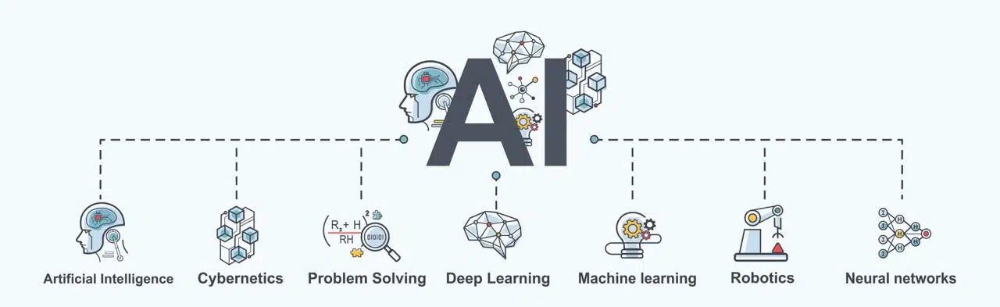
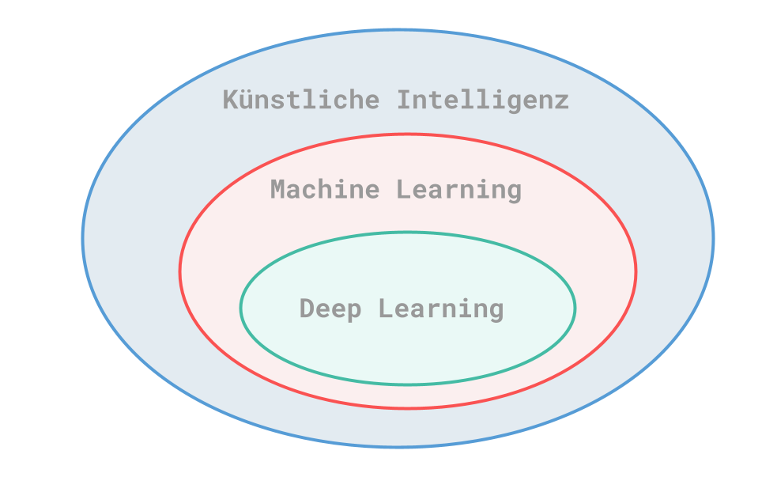
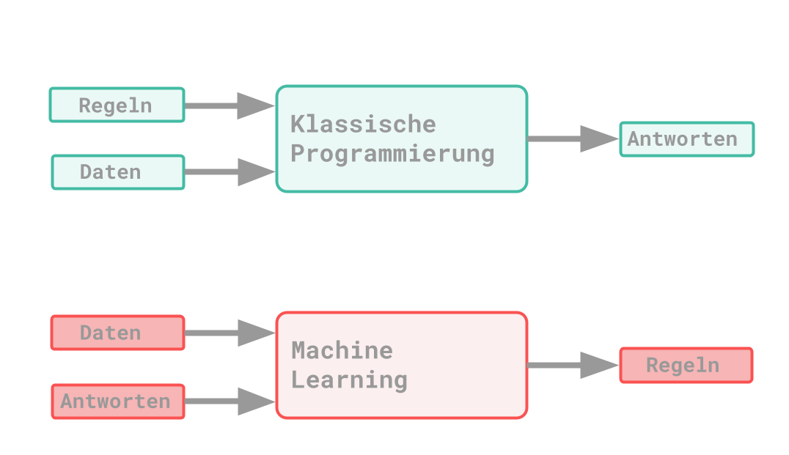
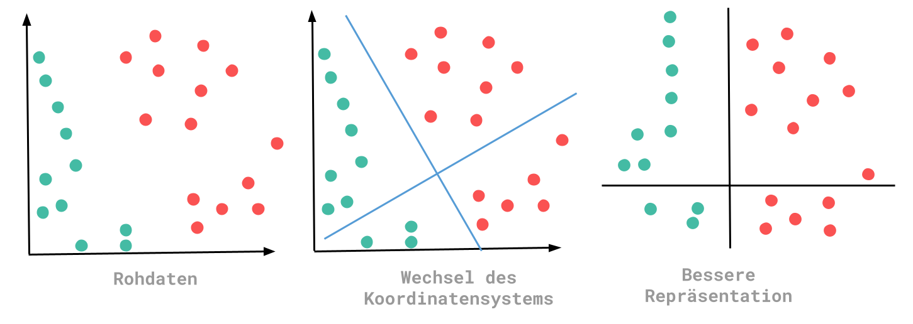
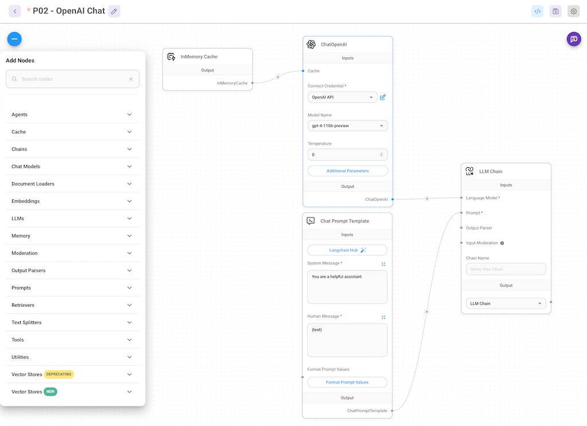
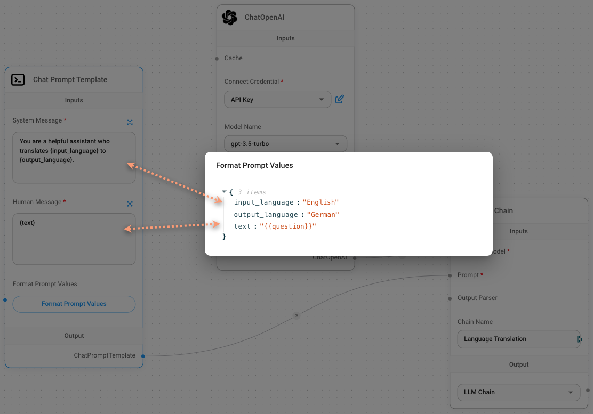
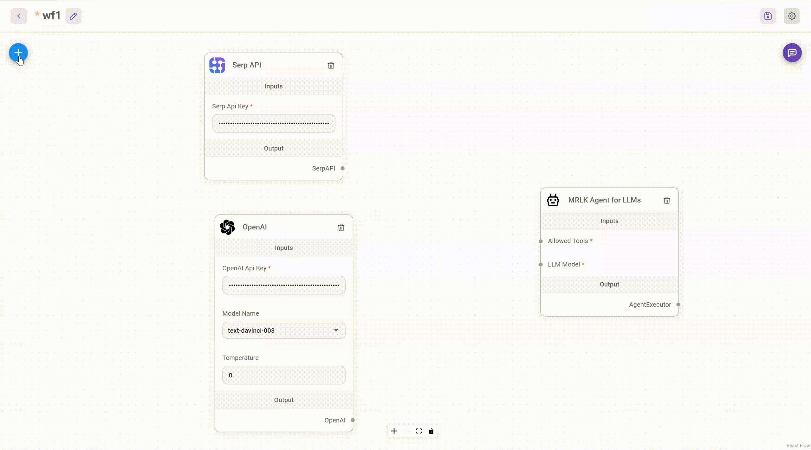
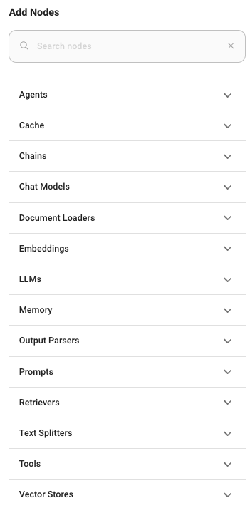
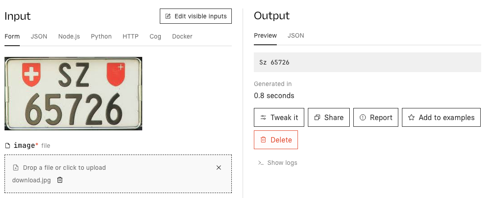

1. Einführung
1.1. Lernziele
-
Sie verstehen die Grundbegriffe der Künstlichen Intelligenz (KI).
-
Sie können die wichtigsten Teilbereiche und Begriffe von KI voneinander abgrenzen.
-
Sie erkennen die Bedeutung von KI in der Informatik und Gesellschaft.
1.2. Begriffe

Begriffe, die alle unter den Oberbegriff künstliche Intelligenz (KI, englisch Artificial Intelligence, AI) fallen. KI ist ein breites Feld der Informatik, das sich mit der Schaffung von Maschinen oder Programmen beschäftigt, die Arbeitsweisen des menschlichen Gehirns nachahmen können, um Probleme zu lösen oder bestimmte Aufgaben durchzuführen.
Viele dieser Begriffe sind im Buch von Benny Botsch [botsch23] beschrieben.
Artificial Intelligence (Künstliche Intelligenz) Künstliche Intelligenz bezieht sich auf Systeme oder Maschinen, die menschenähnliche Fähigkeiten wie Lernen, Denken, Planen, Kreativität und Problemlösung aufweisen. Ziel der KI ist es, Maschinen zu entwickeln, die selbstständig Aufgaben durchführen können, für die normalerweise menschliche Intelligenz erforderlich ist.
Cybernetics (Kybernetik)
1.3. Übungen
-
Erstellen Sie eine Mindmap zu den Begriffen der KI und ordnen Sie Beispiele zu.
-
Recherchieren Sie aktuelle Anwendungsbeispiele für KI in der Wirtschaft.
-
Diskutieren Sie in der Gruppe, welche Chancen und Risiken KI für die Gesellschaft mit sich bringt. Kybernetik ist die Wissenschaft von der Steuerung und der Kommunikation in Organismen, Maschinen und Organisationen. Sie untersucht vor allem, wie Systeme sich selbst regulieren und Informationen verarbeiten, um ihre Ziele zu erreichen. Kybernetik ist eng mit der KI verbunden, da sie die theoretischen Grundlagen für das Verständnis von Feedbackschleifen und adaptiven Systemen bietet, die in der KI-Entwicklung verwendet werden.
Problem Solving (Problemlösung) Problemlösung ist ein Kernaspekt der künstlichen Intelligenz. Es geht darum, Algorithmen zu entwickeln, die komplexe Probleme identifizieren und effektive Lösungen generieren können. In der KI bezieht sich Problemlösung oft auf die Fähigkeit eines Systems, mit neuen, unbekannten Herausforderungen umzugehen und eigenständige Lösungen zu finden.
Deep Learning (Tiefes Lernen) Deep Learning ist ein Teilbereich des maschinellen Lernens und bezieht sich auf Netzwerke, die aus vielen Schichten bestehen, die Daten verarbeiten können. Diese Netzwerke, bekannt als tiefe neuronale Netze, ahmen die Arbeitsweise des menschlichen Gehirns nach und können grosse Mengen an Daten für Aufgaben wie Bild- und Spracherkennung interpretieren. Deep Learning hat bedeutende Fortschritte in der KI ermöglicht, insbesondere in der Verarbeitung natürlicher Sprache und der Bilderkennung.
Machine Learning (Maschinelles Lernen) Maschinelles Lernen ist ein Kernbereich der KI, der Algorithmen verwendet, um Daten zu analysieren, daraus zu lernen und Vorhersagen oder Entscheidungen zu treffen, ohne explizit für jede spezifische Aufgabe programmiert zu werden. Durch das Lernen aus Erfahrungen kann maschinelles Lernen seine Leistung bei bestimmten Aufgaben im Laufe der Zeit verbessern.
Robotics (Robotik) Robotik ist ein interdisziplinäres Feld, das sich mit dem Design, dem Bau und dem Betrieb von Robotern beschäftigt. Obwohl nicht alle Roboter KI nutzen, ist die Integration von KI in die Robotik ein wachsendes Forschungsfeld. KI ermöglicht es Robotern, komplexe Aufgaben durchzuführen, autonom zu agieren und aus ihren Interaktionen mit der Umwelt zu lernen.
Neural Networks (Neuronale Netze) Neuronale Netze sind Algorithmen, die von der Struktur und Funktionsweise des menschlichen Gehirns inspiriert sind. Sie sind ein grundlegendes Werkzeug im maschinellen Lernen und bestehen aus Knoten (Neuronen), die über Schichten hinweg miteinander verbunden sind. Diese Netze können komplexe Muster in Daten erkennen und werden für eine Vielzahl von Aufgaben eingesetzt, darunter Sprach- und Bilderkennung.
Zusammengefasst bilden diese Konzepte die Grundlage für die Entwicklung und den Einsatz von KI-Technologien und -Anwendungen, die zunehmend unseren Alltag und verschiedene Industriezweige prägen.

Machine Learning
Alan Turings Arbeit "Computing Machinery and Intelligence" markierte einen Wendepunkt in den Konzepten der Künstlichen Intelligenz. Eine zentrale These in Turings Arbeit ist die sogenannte "Lady Lovelace Objection". Diese basiert auf einer Aussage von Lady Ada Lovelace aus dem Jahr 1843 über die Analytical Engine von Charles Babbage. Lovelace behauptete, die Maschine könne nichts Neues erschaffen. Turing widersprach dem und argumentierte, dass Allzweckcomputer in der Lage seien, selbst zu lernen.
Dies führte zur grundlegenden Frage des Machine Learning: Kann ein Computer nicht nur auf Basis vorgegebener Regeln Entscheidungen treffen, sondern auch eigenständig aus Daten lernen?
Es gibt wesentliche Unterschiede zwischen dem klassischen Programmierparadigma und dem des Machine Learning: Im klassischen Ansatz werden Daten und Regeln als Input vorgegeben, aus denen dann Antworten generiert werden. Beim Machine Learning hingegen werden Daten und zugehörige Antworten bereitgestellt, damit der Computer die Regeln, die zu diesen Antworten führen, selbstständig erkennt. Diese erlernten Regeln können dann auf neue Daten angewendet werden.

Im Vergleich zum klassischen Programmieren handelt es sich bei Machine Learning mehr um einen Trainingsvorgang. ML ist auch eng mit der mathematischen Statistik verwandt. Ein wesentlicher Unterschied ist, dass ML eine sehr grosse Datenmenge verarbeiten muss.
Repräsentationen
Während des Lernvorgangs eines ML-Algorithmus müssen verschiedene Transformationen vorgenommen werden, um eine geeignete Repräsentation der Daten zu wählen. Diese Repräsentationen ermöglichen das Finden besserer Regeln. Vereinfacht gesagt, ist ML eine Suche nach der besten Repräsentation der eingegebenen Daten.

In diesem Beispiel ermöglicht die veränderte Repräsentation den Schluss, dass alle Punkte, die kleiner als Null sind, die Farbe Grün haben. Bei den Rohdaten wäre eine solche Aussage schwer zu definieren gewesen.
Deep Learning
Deep Learning ist ein Ansatz des Machine Learning. Grundsätzlich sind drei Bestandteile notwendig: Eingabedaten, Ergebnisse und ein Verfahren zur Überprüfung der Resultate. Dabei sollen durch den ML-Algorithmus über mehrere Schichten hinweg passende Repräsentationen der Daten gefunden werden. "Deep" bezieht sich auf die Vielzahl dieser Repräsentationsschichten und beschreibt die Tiefe des Modells. Beim Deep Learning werden diese verschiedenen Repräsentationen durch ein neuronales Netz gelernt. Ein niedriger Wert der Verlustfunktion zeigt an, dass die Ergebnisse näher an den Zielwerten liegen, was bedeutet, dass das neuronale Netz gut trainiert ist. Der Verlustwert misst die Abweichung zwischen dem Output und dem gewünschten Ergebnis.
Anwendungsbeispiele:
-
Bildekennung
-
Spracherkennung
-
Handschrifterkennung
-
Übersetzung
-
Digitale Assistenten
1.4. Simple ML for Sheets
Simple ML für Sheets ermöglicht es jedem, maschinelles Lernen (ML) in Google Sheets zu nutzen, ohne Vorkenntnisse in ML oder Programmierung zu haben oder Daten mit Dritten teilen zu müssen.
Simple ML ist ein Add-on für Google Sheets, das die gängigsten ML-Aufgaben löst. Zu seinen Hauptaufgaben gehören stark automatisierte ML-Funktionen, die keine ML-Kenntnisse der Benutzer erfordern: Vorhersage fehlender Werte, Erkennung ungewöhnlicher Werte und Prognose zukünftiger Werte.
Simple ML ist auch nützlich für ML-Experten, die schnell iterieren oder Prototypen mit kleinen tabellarischen Datensätzen (z. B. <1 Million Beispiele) erstellen möchten. Simple ML bietet klassische Funktionen wie das Training, die Bewertung, das Ausführen oder die Analyse eines Modells. Benutzer können ein Modell nach TensorFlow, Colab, TF Serving exportieren oder das Modell einfach in C++, Go und JavaScript aufrufen. Das Training dauert in der Regel nur wenige Sekunden, was sich hervorragend für schnelle Iterationen eignet.
Aufgabe
Installiere in deiner Umgebung Simple ML. Falls du noch keinen Google Account hast, dann muss vorgängig ein entsprechender Account erstellt werden. Sobald Simple ML installiert ist, können die einzelnen Tutorial durchgespielt werden.
Falls du nicht weiter kommst, dann steht hier ein weiteres YouTube Video zu diesem Thema zur Verfügung.
2. Generative KI ohne Code
2.1. Lernziele
-
Sie kennen die wichtigsten No-Code/Low-Code-Tools für generative KI.
-
Sie können Flowise und Langflow hinsichtlich Funktion und Anwendung beschreiben.
-
Sie beurteilen die Einsatzmöglichkeiten von No-Code-Lösungen im KI-Kontext.
Flowise und Langflow sind Tools, mit denen generative KI-Anwendungen per Drag & Drop erstellt werden können, ohne dass Entwicklerkenntnisse erforderlich sind. Diese Tools erleichtern das schnelle Prototyping und das einfache Ausprobieren von Ideen. Im Folgenden stellen wir die angesagtesten kostenlosen KI-Prototyping-Tools vor.
2.2. Flowise und Langflow
Flowise und Langflow sind kostenlose Low-Code-Tools zur Erstellung von generativen KI-Anwendungen (GenAI). Sie sind direkt im Browser nutzbar und bieten einen Drag & Drop-Editor, mit dem man die typischen Komponenten von GenAI-Anwendungen visuell zusammenstellen und sofort ausprobieren.
2.3. Übungen
-
Testen Sie Flowise oder Langflow und erstellen Sie einen einfachen KI-Workflow (z.B. Text-Generator).
-
Vergleichen Sie die beiden Tools hinsichtlich Bedienbarkeit und Funktionsumfang.
-
Überlegen Sie, für welche Zielgruppe sich No-Code-KI besonders eignet. kann. So kann man beispielsweise in kurzer Zeit einen OpenAI-GPT-basierten Chatbot erstellen.
Flowise und Langflow ermöglichen die schnelle Erstellung von Prototypen für KI-Anwendungen, was besonders bei der Entwicklung generativer KI-Anwendungen hilfreich ist. Diese iterative und ergebnisorientierte Vorgehensweise erleichtert die Zusammenarbeit zwischen Developern, KI- und Sprachspezialisten sowie Fachanwendern. Mit den Tools lassen sich komplexe Abläufe kombinieren, um nützliche Anwendungen wie Content-Generatoren zu erstellen, die Texte, Bilder, Tabellen und mehr automatisch generieren. Der Drag & Drop-Editor, der auf dem visuellen OpenSource-Editor ReactFlow basiert, ist leicht zu bedienen und gleichzeitig leistungsstark.

Ein grosser Vorteil der Prototyping-Lösungen ist, dass sie viele nützliche Komponenten und Integrationen bieten, wie Vektor-Datenbank-Integration, Crawler- und Google-Search-APIs, Text-Splitter und Document Loader für PDFs und Texte. Dies ermöglicht die Entwicklung neuartiger Use-Cases und spart Zeit und Entwickler-Ressourcen.
2.4. Unterschiede
Flowise bietet die meisten Integrationen und zahlreiche Zusatz-Tools, wodurch es sich ideal zur Erstellung beliebiger GenAI-Anwendungs-Prototypen eignet. Namhafte Unternehmen wie AWS, Alibaba, Hitachi, ByteDance, Microsoft, InsightSoftware, Google und Accenture nutzen Flowise.
Langflow bietet weniger Integrationen, da es speziell für das Prototyping von Langchain-Anwendungen konzipiert ist. Langchain ist ein beliebtes Framework zur Entwicklung von GenAI-Anwendungen. Langflow hat wahrscheinlich eine grössere Verbreitung bei vielen Nutzern, da Langchain häufig in den Online-Kursen von deeplearning.ai verwendet wird, die von vielen LLM-Einsteigern besucht werden.
Wir werden Langchain zu einem späteren Zeitpunkt auch betrachten.
2.5. Flowise AI
Lernziele
-
Sie verstehen die Grundfunktionen von FlowiseAI.
-
Sie können Workflows visuell modellieren und erläutern.
-
Sie erkennen die Vorteile von Drag-and-Drop-Interfaces für KI-Anwendungen.
Einleitung
FlowiseAI ist eine innovative Plattform für den Entwurf, die Entwicklung und die Verwaltung von künstlicher Intelligenz (KI) und maschinellem Lernen (ML). Sie bietet eine benutzerfreundliche Umgebung, in der Entwickler und Datenwissenschaftler Workflows für KI und ML erstellen können, ohne tiefgreifende Programmierkenntnisse zu benötigen. FlowiseAI integriert verschiedene Tools und Dienste, um den gesamten Entwicklungsprozess von der Datenvorbereitung bis zur Bereitstellung von Modellen zu unterstützen.
Hauptmerkmale von FlowiseAI
-
Visuelle Workflow-Erstellung: FlowiseAI ermöglicht die visuelle Erstellung von Workflows durch ein Drag-and-Drop-Interface. Dies vereinfacht den Prozess der Modellentwicklung und macht ihn zugänglicher für Nicht-Programmierer.
-
Integration mit verschiedenen Datenquellen: FlowiseAI kann Daten aus unterschiedlichen Quellen wie Datenbanken, Cloud-Speichern und APIs integrieren, was die Datenvorbereitung und -verarbeitung erleichtert.
-
Automatisiertes Machine Learning (AutoML): Die Plattform bietet AutoML-Funktionen, die es ermöglichen, automatisch die besten ML-Modelle für spezifische Aufgaben zu finden und zu optimieren.
-
Echtzeit-Datenverarbeitung: FlowiseAI unterstützt Echtzeit-Datenströme, was besonders für Anwendungen in den Bereichen IoT und Finanzdienstleistungen von Vorteil ist.
-
Skalierbarkeit: Durch die Nutzung von Cloud-Infrastrukturen kann FlowiseAI skalieren, um große Datenmengen und komplexe Modelle effizient zu verarbeiten.
Einsatzmöglichkeiten
FlowiseAI kann in verschiedenen Bereichen eingesetzt werden, darunter:
-
Finanzwesen: Betrugserkennung, Risikomanagement und algorithmischer Handel.
-
Gesundheitswesen: Diagnoseunterstützung, personalisierte Medizin und Verwaltung von Patientendaten.
-
Industrie 4.0: Vorausschauende Wartung, Qualitätskontrolle und Automatisierung.
-
Marketing: Kundensegmentierung, Vorhersage von Kundenverhalten und Optimierung von Marketingkampagnen.
Vorteile von FlowiseAI
-
Benutzerfreundlichkeit: Durch das visuelle Interface und die Drag-and-Drop-Funktionalität ist FlowiseAI auch für Benutzer ohne tiefgehende Programmierkenntnisse geeignet.
-
Zeitersparnis: Automatisierte Workflows und AutoML reduzieren den Zeitaufwand für die Entwicklung und Optimierung von Modellen.
-
Flexibilität: Die Plattform unterstützt verschiedene ML-Frameworks und kann mit unterschiedlichen Datenquellen integriert werden.
-
Kostenreduktion: Durch die Optimierung von Workflows und die Automatisierung von Prozessen können Unternehmen Kosten einsparen.
Herausforderungen und Einschränkungen
Trotz der vielen Vorteile gibt es auch einige Herausforderungen bei der Nutzung von FlowiseAI:
-
Anfangsinvestition: Die Implementierung und Schulung können initial kosten- und zeitaufwendig sein.
-
Datenqualität: Die Qualität der Ergebnisse hängt stark von der Qualität der Eingabedaten ab. Schlechte Datenqualität kann zu ungenauen Modellen führen.
-
Komplexe Szenarien: Für sehr komplexe Anwendungsfälle kann es erforderlich sein, tiefergehendes technisches Wissen und manuelle Anpassungen vorzunehmen.
Zukunftsperspektiven
FlowiseAI hat das Potenzial, die Art und Weise, wie KI und ML in verschiedenen Branchen eingesetzt werden, grundlegend zu verändern. Durch die kontinuierliche Weiterentwicklung und Integration neuer Technologien wird FlowiseAI voraussichtlich eine zentrale Rolle in der zukünftigen KI-Landschaft spielen.
Installation der Software wird unter Flowise AI erläutert.
3. LangChain
3.1. Lernziele
-
Sie verstehen das Prinzip von LangChain und dessen Komponenten.
-
Sie können einfache Anwendungen mit LangChain konzipieren.
-
Sie erkennen die Einsatzmöglichkeiten von LLMs in der Praxis.
3.2. Einführung in LangChain
In diesem Kapitel werden wir uns mit LangChain beschäftigen, einem leistungsstarken Werkzeug zur Erstellung von Anwendungen mithilfe von Large Language Models (LLMs). Sie werden lernen, wie man LangChain einsetzt, um komplexe Anwendungen zu entwicklen, und dabei die verschiedenen Komponenten und Funktionen von LangChain verstehen.
Theoretische Grundlagen
Übersicht und Einsatzmöglichkeiten von LangChain
LangChain ist ein Framework, das die Entwicklung von Anwendungen erleichtert, die auf großen Sprachmodellen (Large Language Models, LLMs) basieren. Es ermöglicht die nahtlose Integration von LLMs in verschiedene Anwendungen und bietet dabei umfassende Unterstützung für die Verbindung mit externen Datenquellen, Schnittstellen und andere KI-Komponenten.
Einsatzgebiete von LangChain:
-
Erstellung von Chatbots und dialogorientierten Anwendungen
-
Dokumentanalyse und Inhaltsgenerierung
-
Automatisierte Übersetzungsdienste
-
Intelligente Assistenten und Agenten
Architektur von LangChain
LangChain besteht aus mehreren Schlüsselkomponenten, die zusammenarbeiten, um komplexe Aufgaben zu bewältigen:
-
PromptTemplates: Strukturierte Vorlagen, die Eingabeaufforderungen für LLMs formatieren und generieren.
-
Chains: Verknüpfen mehrere Schritte und Operationen, um komplexere Workflows zu erstellen.
-
Agents: Interaktive Systeme, die kontinuierlich Informationen sammeln und Aktionen basierend auf Benutzerinteraktionen ausführen.
-
Toolkits: Sammlung von nützlichen Tools und APIs zur Erweiterung der Funktionen.
Installation und Einrichtung
Die Installation von LangChain ist unkompliziert und kann mit den folgenden Schritten durchgeführt werden:
-
Erstellung eines Python-Virtualenv:
python -m venv langchain-env source langchain-env/bin/activate -
Installation von LangChain mittels pip:
pip install langchain -
Zusätzliche Abhängigkeiten und Tools installieren:
pip install openai -
Setzen des OpenAI-API-Schlüssels als Umgebungsvariable:
export OPENAI_API_KEY='your_openai_api_key'
3.3. Praktische Übungen
Diese Übungen helfen Ihnen, die Grundlagen von LangChain zu verstehen und erste Anwendungen zu erstellen.
Übung 1: Erstellen eines PromptTemplate
-
PromptTemplate erstellen:
Mit FlowiseAI konnten wir gemäss folgender Abbildung eine Vorlage (Template) mit entsprechenden Platzhaltern erstellen

Abbildung 6. Prompt TemplateNun wollen wir dasselbe mit Python umsetzen.
from langchain.prompts import PromptTemplate template = "Schreibe eine kurze Geschichte über einen Helden namens {name}." prompt = PromptTemplate(template=template, input_variables=["name"]) story_prompt = prompt.format(name="Arthur") print(story_prompt) -
Ergebnis analysieren und Verbesserungsvorschläge überlegen.
Übung 2: Erstellen einer Chain
-
Einfache Chain erstellen:
from langchain import LLMChain from langchain.llms import OpenAI llm = OpenAI(api_key="your_openai_api_key") chain = LLMChain(llm=llm, prompt=prompt) story = chain.run({"name": "Arthur"}) print(story) -
Korrigieren des Codes:
Obiger Code schein nicht einwandfrei zu laufen. Versuchen Sie mit Hilde der KI die notwendigen Korrekturen anzubringen, sodass das kurze Script fehlerrei gestartet werden kann.
Übung 3: Arbeiten mit Agents
-
Einfachen Agent erstellen, der Fragen beantwortet:
from langchain_community.utilities import SerpAPIWrapper search = SerpAPIWrapper() result = search.run("Obama's first name?") print(result) -
Agenten konfigurieren und verschiedene Tools ausprobieren.
3.4. Aufgaben für Selbststudium
Diese Aufgaben sollen Ihnen helfen, LangChain eigenständig zu und Ihre eigenen Projekte zu realisieren.
Aufgabe 1: Erstellen eines intelligenten Chatbots
-
Zieldefinition und Anwendungsfall skizzieren: Definieren Sie einen Anwendungsfall für Ihren Chatbot und erstellen Sie eine funktionsfähige Skizze der Anwendung.
-
Implementierung des Chatbots: Setzen Sie Ihren Anwendungsfall um, indem Sie die gelernten Konzepte anwenden und einen funktionalen Chatbot erstellen.
-
Testen und Dokumentation: Testen Sie den Chatbot in verschiedenen Szenarien und dokumentieren Sie die Ergebnisse sowie aufgetretene Herausforderungen.
Aufgabe 2: Entwickeln einer dokumentenzentrierten Anwendung
-
Dokumentenquelle identifizieren: Finden Sie eine geeignete Dokumentenquelle (z.B. PDF, Website) und laden Sie diese zur Analyse hoch.
-
Erstellen einer Verarbeitungskette (Chain): Entwickeln Sie eine Kette, die die Dokumente analysiert, relevante Informationen extrahiert und eine Zusammenfassung erstellt.
-
Integration und Test: Integrieren Sie die Kette in eine Anwendung und testen Sie die Ergebnisse. Optimieren Sie die Kette gegebenenfalls für bessere Ergebnisse.
Mit diesen Übungen und Aufgaben haben Sie eine umfassende Einführung in LangChain und können Ihre Fähigkeiten zur Erstellung komplexer LLM-basierter Anwendungen weiter vertiefen.
Viel Erfolg!
4. Vector-Stores und -Embeddings
4.1. Lernziele
-
Sie verstehen das Konzept von Vektorrepräsentationen und Vector Stores.
-
Sie können Embeddings und deren Einsatz im KI-Kontext erklären.
-
Sie kennen die wichtigsten Anwendungsfälle für Vector Stores.
4.2. Theoretische Grundlagen
Was sind Vector Stores?
Ein Vector Store ist eine spezialisierte Datenbank, die darauf ausgelegt ist, hochdimensionale Vektoren effizient zu speichern und abzufragen. Vektoren sind mathematische Objekte, die aus einer Liste von numerischen Werten bestehen und in der Regel in einem n-dimensionalen Raum dargestellt werden. In der Welt der künstlichen Intelligenz und des maschinellen Lernens werden Vektoren häufig verwendet, um komplexe Datenstrukturen wie Text, Bilder und Videos zu repräsentieren.
Vector Stores bieten eine Reihe von Funktionen, die speziell für die Handhabung von Vektoren entwickelt wurden. Dazu gehören:
-
Speichern und Verwalten grosser Mengen von Vektoren: Vector Stores sind darauf ausgelegt, Millionen bis Milliarden von Vektoren effizient zu speichern, ohne dass die Leistung darunter leidet.
-
Schnelle und präzise Abfragen: Durch spezialisierte Indizierungsmechanismen können Vector Stores schnelle und genaue Suchen nach ähnlichen Vektoren durchführen.
-
Integrationsmöglichkeiten: Vector Stores sind oft mit anderen Tools und Bibliotheken kompatibel, die in der Datenanalyse und im maschinellen Lernen verwendet werden, sodass sie leicht in bestehende Workflows integriert werden können.
Ein praktisches Beispiel für die Anwendung von Vector Stores ist die Suche nach semantisch ähnlichen Dokumenten. Hierbei werden Textdokumente in Vektoren umgewandelt (z.B. durch die Verwendung von TF-IDF, Word2Vec oder BERT), und diese Vektoren werden dann in einem Vector Store gespeichert. Bei einer Abfrage kann der Vector Store effizient die Vektoren durchsuchen und die Dokumente finden, die dem Abfragevektor am ähnlichsten sind.
Unterschiede zu traditionellen Datenbanken
Während traditionelle Datenbanken wie relationale Datenbanken (z.B. MySQL, PostgreSQL) gut für strukturierte Daten und konventionelle Abfragen geeignet sind, sind sie für den Umgang mit hochdimensionalen Vektordaten weniger optimal. Hier sind einige wesentliche Unterschiede zwischen Vector Stores und traditionellen Datenbanken:
-
Datenstruktur: Traditionelle Datenbanken speichern Daten meist in Tabellenform, wobei jede Zeile einen Datensatz und jede Spalte ein Attribut darstellt. Im Gegensatz dazu speichern Vector Stores Daten als Vektoren in einem n-dimensionalen Raum.
-
Abfragemethoden: Relationale Datenbanken verwenden SQL (Structured Query Language) für Abfragen, die auf Attributen und deren Werten basieren. Vector Stores hingegen verwenden spezialisierte Algorithmen wie Approximate Nearest Neighbor (ANN) Search, um ähnliche Vektoren zu finden.
-
Leistung und Skalierbarkeit: Bei der Suche nach ähnlichen Vektoren profitieren Vector Stores von speziellen Datenstrukturen (z.B. K-D Trees, Ball Trees) und Indexierungstechniken, die für hohe Dimensionsräume optimiert sind. Traditionelle Datenbanken sind in der Regel nicht für solche Anwendungsfälle optimiert und können bei grossen Datensätzen und komplexen Abfragen Leistungseinbussen erleben.
-
Anwendungsfälle: Vector Stores werden häufig in Anwendungen verwendet, die semantische Ähnlichkeit oder inhaltliche Übereinstimmung benötigen, wie z.B. in Empfehlungsalgorithmen, Suchmaschinen und Bilderkennungssystemen. Traditionelle Datenbanken sind ideal für Anwendungen, die transaktionale Integrität, ACID-Eigenschaften (Atomicity, Consistency, Isolation, Durability) und strukturierte Datenmodelle benötigen.
Durch diese klaren Unterschiede bieten Vector Stores eine spezialisierte und effiziente Lösung für moderne Anforderungen im Bereich der künstlichen Intelligenz und des maschinellen Lernens.
4.3. Einführung in Vektorrepräsentationen
Bedeutung von Vektoren im maschinellen Lernen und in der künstlichen Intelligenz
Vektoren spielen eine zentrale Rolle im maschinellen Lernen und in der künstlichen Intelligenz, da sie eine effiziente und mathematisch fundierte Methode bieten, um komplexe Daten in einer Weise zu repräsentieren, die für Algorithmen leicht verständlich und verarbeitbar ist. Ein Vektor ist eine geordnete Liste von Zahlen, die einen Punkt in einem mehrdimensionalen Raum repräsentiert. Diese Repräsentation ermöglicht es, Daten wie Texte, Bilder, Videos und andere Formen von Informationen in ein Format zu überführen, das durch mathematische und statistische Methoden analysiert und manipuliert werden kann.
Im maschinellen Lernen werden Vektoren verwendet, um Merkmale aus Daten zu extrahieren und sie in einem mehrdimensionalen Raum zu positionieren. Jedes Merkmal eines Datensatzes wird durch eine Dimension im Vektorraum repräsentiert. Wenn alle Merkmale zusammengeführt werden, ergibt sich ein Vektor, der den gesamten Datensatz beschreibt. Dieses Vorgehen ermöglicht es Algorithmen, Muster in den Daten zu erkennen, Beziehungen zwischen verschiedenen Datensätzen zu identifizieren und komplexe Vorhersagen zu treffen.
Ein herausragendes Beispiel für die Bedeutung von Vektoren ist die Verarbeitung natürlicher Sprache (Natural Language Processing, NLP). Hier werden Wörter oder Textsegmente in numerische Vektoren umgewandelt, die semantische und syntaktische Informationen erfassen. Diese numerische Darstellung ermöglicht es Maschinen, Text zu verstehen, Texte zu klassifizieren, semantische Ähnlichkeiten zu berechnen und sogar natürliche Sprache zu generieren.
Die Fähigkeit, Daten in Vektorform zu repräsentieren und zu analysieren, hat viele bahnbrechende Entwicklungen in der künstlichen Intelligenz ermöglicht, einschliesslich der Entwicklung von Sprachmodellen, Bilderkennungssystemen, Empfehlungsalgorithmen und vielen anderen Anwendungen. Im Wesentlichen bilden Vektoren die Grundlage für die Verarbeitung und Analyse von Daten in modernen KI-Systemen.
Beispiele für Vektoren: Wortvektoren
Ein besonders anschauliches Beispiel für die Nutzung von Vektoren im Bereich der KI sind Wortvektoren. Wortvektoren sind numerische Repräsentationen von Wörtern, die semantische Beziehungen zwischen Wörtern in einem kontinuierlichen Vektorraum erfassen. Diese Repräsentationen ermöglichen es, die Bedeutung von Wörtern auf eine Weise zu modellieren, die für maschinelle Lernalgorithmen zugänglich und nützlich ist.
Zu den bekanntesten Methoden zur Erzeugung von Wortvektoren zählen Word2Vec, GloVe (Global Vectors for Word Representation) und das BERT-Modell (Bidirectional Encoder Representations from Transformers).
-
Word2Vec: Word2Vec ist ein Algorithmus, der von Google entwickelt wurde und darauf abzielt, Wörter in einem kontinuierlichen Vektorraum zu positionieren, basierend auf ihrem Kontext in einem Textkorpus. Word2Vec verwendet zwei Architekturen: Continuous Bag of Words (CBOW) und Skip-gram. CBOW sagt ein Wort basierend auf seinem Kontext voraus, während Skip-gram verwendet wird, um den Kontext basierend auf einem gegebenen Wort vorherzusagen. Das Ergebnis ist ein Satz von Vektoren, bei dem ähnliche Wörter in der Nähe voneinander im Vektorraum liegen.
-
GloVe: GloVe ist ein weiteres populäres Verfahren zur Erzeugung von Wortvektoren, entwickelt von der Stanford University. Im Gegensatz zu Word2Vec, das lokale Kontexte verwendet, nutzt GloVe globale statistische Informationen aus der gesamten Textmenge. Es optimiert die Vektoren, indem es die Wahrscheinlichkeit modelliert, dass zwei Wörter zusammen in einem bestimmten Kontext auftreten. Dadurch werden Vektoren erzeugt, die eine hohe semantische Genauigkeit aufweisen und Wortbeziehungen besser erfassen.
-
BERT: BERT ist ein tiefes, bidirektionales Transformationsmodell, das die Bedeutung von Wörtern und deren Kontext in einem Text erfasst. Es verwendet eine maskierte Wortprädiktionsaufgabe sowie eine Satzpaar-Klassifizierungsaufgabe, um kontextuelle Repräsentationen von Wörtern zu lernen. BERT-Vektoren sind kontextspezifisch, was bedeutet, dass dasselbe Wort unterschiedliche Vektoren in verschiedenen Kontexten haben kann. Diese Eigenschaft macht BERT besonders leistungsfähig bei Aufgaben der natürlichen Sprachverarbeitung.
Dank dieser Methoden können Wortvektoren verwendet werden, um semantische Ähnlichkeiten zu berechnen, Wörter zu klassifizieren, Textdokumente zu clustern und viele andere NLP-bezogene Aufgaben zu lösen. Wortvektoren sind ein hervorragendes Beispiel dafür, wie Vektorrepräsentationen die Fähigkeit von Maschinen, natürliche Sprache und ihre Bedeutungen zu verstehen, revolutioniert haben.
4.4. Vector Embeddings
Was sind Embeddings?
Embeddings sind eine Möglichkeit, komplexe Daten wie Wörter, Sätze, Bilder oder andere Elemente numerisch zu repräsentieren, indem sie in einen niedrigdimensionalen Vektorraum eingebettet werden. Diese Vektoren, auch Embeddings genannt, erfassen die relevanten Merkmale und Beziehungen der ursprünglichen Daten in einer hoch verdichteten und manchmal weniger dimensionalen Form. Embeddings spielen eine zentrale Rolle in vielen Anwendungen des maschinellen Lernens und der künstlichen Intelligenz, da sie die Grundlage für die Verarbeitung und Analyse komplexer Daten bieten.
Das grundlegende Ziel von Embeddings ist es, semantisch ähnliche Datenpunkte näher zusammen zu positionieren und unähnliche Datenpunkte weiter auseinander zu halten. Beispielsweise könnten in einem Wortembedding-Raum die Vektoren für "König" und "Königin" nahe beieinander liegen, weil sie semantisch ähnlich sind, während "König" und "Auto" weiter getrennt sind, da sie unterschiedliche Bedeutungen haben.
Ein wesentlicher Vorteil von Embeddings ist ihre Fähigkeit, hohe Dimensionen und komplexe Datenstrukturen in handhabbare und recheneffiziente Vektoren zu überführen. Diese Transformation erleichtert es maschinellen Lernmodellen, die Daten zu verarbeiten und Muster oder Beziehungen zu erkennen, die in den Rohdaten nicht offensichtlich sind.
Embeddings werden häufig in der Verarbeitung natürlicher Sprache (Natural Language Processing, NLP) verwendet, um Wörter und Sätze in dichte Vektoren umzuwandeln. Diese Vektoren erfassen die semantischen und syntaktischen Merkmale der Sprache, sodass maschinelle Lernmodelle Text verstehen und analysieren können. Neben NLP-Anwendungen finden Embeddings auch in der Bilderkennung, der Empfehlungssysteme und vielen anderen Bereichen Anwendung, in denen hochdimensionale Daten verarbeitet werden müssen.
Methoden zur Erzeugung von Embeddings
Es gibt verschiedene Methoden zur Erzeugung von Embeddings, die je nach Anwendungsfall und Datenstruktur eingesetzt werden. Hier sind einige der bekanntesten und am häufigsten verwendeten Ansätze:
-
Word2Vec: Word2Vec ist eine Technik, die von Google entwickelt wurde, um Wörter aus grossen Textkorpora in kontinuierliche Vektoren zu überführen. Es gibt zwei Hauptarchitekturen in Word2Vec: Continuous Bag of Words (CBOW) und Skip-gram. CBOW sagt ein Wort basierend auf seinem Kontext voraus, während Skip-gram den Kontext basierend auf einem zentralen Wort vorhersagt. Diese architektonischen Ansätze ermöglichen es dem Modell, semantische Beziehungen zwischen Wörtern zu erlernen und Wörter mit ähnlicher Bedeutung in der Nähe im Vektorraum zu platzieren.
-
GloVe (Global Vectors for Word Representation): GloVe ist ein weiteres Verfahren zur Erzeugung von Wortvektoren, das von der Stanford University entwickelt wurde. GloVe kombiniert globale statistische Informationen aus dem gesamten Textkorpus mit der lokalen Kontextinformation, um hochpräzise Wortvektoren zu erzeugen. Dies wird erreicht, indem die Wahrscheinlichkeit modelliert wird, dass Wörter in bestimmten Kontexten zusammen auftreten. Das Resultat sind Vektoren, die eine starke semantische Bedeutung besitzen und präzise Wortbeziehungen erfassen.
-
FastText: FastText, entwickelt von Facebook, erweitert das Word2Vec-Modell, indem es Wörter als N-Gramme (Teilstücke von Wörtern) darstellt. Durch die Verwendung von Subwortinformationen kann FastText effektiver mit seltenen und unbekannten Wörtern umgehen, da auch unbekannte Wörter in ihre N-Gramme zerlegt und deren Vektoren summiert werden. Dies führt zu robusteren Wortvektoren, insbesondere für Sprachen mit komplexen Morphologien.
-
BERT (Bidirectional Encoder Representations from Transformers): BERT ist ein hochentwickeltes Sprachmodell, das von Google entwickelt wurde und auf der Transformer-Architektur basiert. BERT erzeugt kontextabhängige Wortvektoren, indem es den bidirektionalen Kontext eines Wortes in einem Satz berücksichtigt. Dies ermöglicht es dem Modell, tiefere semantische Bedeutungen zu erfassen und in Aufgaben der natürlichen Sprachverarbeitung (z.B. Fragebeantwortung, Named Entity Recognition) aussergewöhnlich gut abzuschneiden. BERT verwendet Masked Language Modeling (MLM) und Next Sentence Prediction (NSP) zur Erzeugung hochwertiger Embeddings.
-
Sentence-BERT (SBERT): Sentence-BERT erweitert das BERT-Modell, indem es ganze Sätze in dichte Vektoren einbettet, die semantische Informationen über den gesamten Satz hinweg erfassen. Dies ermöglicht es, semantische Ähnlichkeiten auf Satz- oder Textabsatzebene zu berechnen und ist besonders nützlich für Textklassifikation, Informationsabruf und Satzähnlichkeitsaufgaben.
-
DeepWalk: DeepWalk ist eine Methode zur Erzeugung von Embeddings für Netzwerke oder Graphen. Sie transformiert Grapheninformationen in niedrigdimensionale Vektoren, wobei zufällige Wanderungen (Random Walks) auf dem Graphen durchgeführt und diese als Sätze behandelt werden. Diese Sätze werden anschließend mit Techniken wie Word2Vec verarbeitet, um Knotenembeddings zu erzeugen, die die Struktur und Beziehungen im Graphen widerspiegeln.
Diese Methoden zur Erzeugung von Embeddings haben bedeutende Fortschritte in verschiedenen Anwendungen ermöglicht, indem sie die Rohdaten in eine Form überführen, die recheneffizient ist und tiefere semantische Bedeutungen erfassen kann. Die Auswahl der geeigneten Methode hängt von der speziellen Anwendung und den Datenanforderungen ab.
4.5. Verwendung von Vector Embeddings
Anwendungsbereiche von Embeddings
Vector Embeddings finden Einsatz in einer Vielzahl von Anwendungen im Bereich der künstlichen Intelligenz und des maschinellen Lernens. Ihre Fähigkeit, komplexe und hochdimensionale Daten in dichte, numerische Vektoren zu verwandeln, ermöglicht es, verschiedene Arten von Informationen zu vergleichen, zu klassifizieren und zu analysieren. Hier sind einige der wichtigsten Anwendungsbereiche von Embeddings:
-
Informationsabruf und -wiedergewinnung: Embeddings werden häufig verwendet, um Dokumente oder Datenpunkte zu repräsentieren, die in grossen Datenmengen gespeichert sind. Durch die Berechnung von Ähnlichkeiten zwischen Embeddings können relevante Dokumente effizienter abgerufen werden, was nützlich ist in Suchmaschinen, Fragebeantwortungssystemen und bei der Indexierung von Daten.
-
Textklassifikation: Eine der weit verbreiteten Anwendungen von Embeddings ist die Textklassifikation. Hierbei werden Textdaten in Vektoren umgewandelt, die dann als Input für Klassifikationsmodelle dienen. Dies ermöglicht es, Texte automatisch in Kategorien einzuordnen, wie z.B. Spam-Erkennung in E-Mails oder Sentiment-Analyse in sozialen Medien.
-
Ähnlichkeitssuche und Clustering: Embeddings werden auch in der Ähnlichkeitssuche und beim Clustering verwendet. Bei der Ähnlichkeitssuche werden Vektoren verwendet, um die Ähnlichkeit zwischen Datenpunkten zu berechnen und ähnliche Elemente zu finden. Beim Clustering werden Datenpunkte basierend auf ihren Vektorrepräsentationen in Gruppen unterteilt, um Muster und Strukturen in den Daten zu erkennen.
-
Empfehlungssysteme: Moderne Empfehlungssysteme nutzen Embeddings, um Benutzerpräferenzen und Artikelmerkmale darzustellen. Durch die Berechnung der Ähnlichkeiten zwischen Benutzer- und Artikel-Embeddings können personalisierte Empfehlungen generiert werden, die auf den Präferenzen des Benutzers basieren.
-
Bilderkennung und -klassifikation: In der Computer Vision werden Bilder in Embeddings umgewandelt, die visuelle Merkmale und Inhalte erfassen. Diese Embeddings können verwendet werden, um Bilder zu klassifizieren, ähnliches Bildmaterial zu finden oder Objekte in Bildern zu erkennen.
-
Sprachübersetzung und Sprachgenerierung: Embeddings spielen eine zentrale Rolle in der maschinellen Übersetzung und Sprachgenerierung. Modelle wie BERT und GPT verwenden Embeddings, um den Kontext und die Bedeutung von Wörtern und Sätzen zu erfassen, was die Übersetzung und Erzeugung natürlicher Sprache verbessert.
-
Graphenanalyse: Embeddings werden auch verwendet, um Knoten in Graphen zu repräsentieren. Dies ermöglicht die Analyse von Netzwerkstrukturen, z.B. zur Erkennung von Gemeinschaften, zur Vorhersage von Links oder zur Klassifizierung von Knoten basierend auf ihrer Einbettung.
Praktische Beispiele mit Pseudocode
Um die praktische Anwendung von Embeddings zu veranschaulichen, betrachten wir einige Beispiele, die zeigen, wie Embeddings in verschiedenen Szenarien genutzt werden können.
-
Ähnlichkeitssuche im Text: Ein häufiges Anwendungsgebiet von Embeddings ist die Berechnung der semantischen Ähnlichkeit zwischen Texten. Hier ist ein Pseudocode-Beispiel, das zeigt, wie Embeddings verwendet werden können, um ähnliche Sätze zu finden:
# Pseudocode zur Berechnung der semantischen Ähnlichkeit zwischen Texten import embedding_library # Texte definieren text1 = "Das Wetter ist heute sonnig." text2 = "Es ist ein heller und sonniger Tag." text3 = "Ich liebe kaltes Winterwetter." # Erzeugen von Embeddings embedding1 = embedding_library.create_embedding(text1) embedding2 = embedding_library.create_embedding(text2) embedding3 = embedding_library.create_embedding(text3) # Berechnung der Ähnlichkeiten (z.B. Kosinus-Ähnlichkeit) similarity_1_2 = embedding_library.cosine_similarity(embedding1, embedding2) similarity_1_3 = embedding_library.cosine_similarity(embedding1, embedding3) # Ausgabe der Ergebnisse print(f"Ähnlichkeit zwischen Text 1 und Text 2: {similarity_1_2}") print(f"Ähnlichkeit zwischen Text 1 und Text 3: {similarity_1_3}") -
Textklassifikation mit Embeddings: In diesem Beispiel verwenden wir Embeddings, um Texte in Kategorien einzuordnen. Der Pseudocode zeigt, wie ein Klassifikationsmodell mit Embeddings trainiert wird:
# Pseudocode zur Textklassifikation import embedding_library from machine_learning_library import Classifier # Trainingsdaten texts = ["Diese E-Mail ist Spam.", "Dies ist eine legitime E-Mail.", ...] labels = ["Spam", "Ham", ...] # Erzeugen von Embeddings für die Trainingsdaten embeddings = [embedding_library.create_embedding(text) for text in texts] # Trainingsdatenset erstellen train_data = (embeddings, labels) # Klassifikationsmodell erstellen und trainieren classifier = Classifier() classifier.train(train_data) # Klassifikation eines neuen Textes new_text = "Dies ist eine neue E-Mail, die klassifiziert werden soll." new_embedding = embedding_library.create_embedding(new_text) prediction = classifier.predict(new_embedding) # Ausgabe der Klassifikation print(f"Die Klassifikation des neuen Textes ist: {prediction}") -
Empfehlungssystem mit Embeddings: Hier ein Pseudocode-Beispiel zur Implementierung eines einfachen Empfehlungssystems, das Artikel basierend auf Benutzerpräferenzen empfiehlt:
# Pseudocode für ein Empfehlungssystem import embedding_library from recommendation_library import Recommender # Beispiel-Benutzerdaten user_preferences = ["Artikel 1", "Artikel 2", ...] # Erzeugen von Embeddings für die Benutzerdaten user_embeddings = [embedding_library.create_embedding(item) for item in user_preferences] # Artikel-Datenbank articles = ["Artikel A", "Artikel B", "Artikel C", ...] article_embeddings = [embedding_library.create_embedding(article) for article in articles] # Empfehlungssystem erstellen und trainieren recommender = Recommender() recommender.train(user_embeddings, article_embeddings) # Empfehlungen generieren recommendations = recommender.recommend(user_embeddings) # Ausgabe der Empfehlungen for recommendation in recommendations: print(recommendation)
Diese Beispiele veranschaulichen die praktischen Anwendungen von Embeddings in verschiedenen Szenarien. Durch das Umwandeln von Daten in dichte numerische Vektoren ermöglichen Embeddings eine effiziente Verarbeitung, Analyse und Vorhersage in einer Vielzahl von maschinellen Lernanwendungen.
4.6. Einführung in Vector Stores
Architektur und Funktionsweise von Vector Stores
Vector Stores sind spezialisierte Datenbanksysteme, die entwickelt wurden, um hochdimensionale Vektoren effizient zu speichern und abzufragen. Die zugrundeliegende Architektur und Funktionsweise von Vector Stores sind darauf abgestimmt, die Herausforderungen bei der Verarbeitung und Suche in grossen Vektormengen zu bewältigen. Hier ein detaillierter Überblick über die Architektur und Funktionsweise:
-
Datenstrukturen und Speicher: Vector Stores nutzen spezialisierte Datenstrukturen und Speichertechniken, um Vektoren effizient zu speichern und abzurufen. Dazu zählen In-Memory-Speicher, Festplattenspeicher oder hybride Ansätze, die eine Mischung aus beiden verwenden. Die Wahl der Datenstruktur hängt von den Anforderungen an die Lade- und Abfragezeiten sowie der Menge und Grösse der zu speichernden Vektoren ab.
-
Indexierung: Eine der Schlüsselkomponenten eines Vector Stores ist das Indexierungssystem. Da Vektoren im Allgemeinen hochdimensional sind, ist eine einfache lineare Suche ineffizient. Stattdessen verwenden Vector Stores fortschrittliche Indexierungsalgorithmen wie Approximate Nearest Neighbor (ANN) oder strukturbasierte Methoden wie k-d Trees, Ball Trees oder HNSW (Hierarchical Navigable Small World Graphs). Diese Techniken reduzieren die Abfragezeiten erheblich, indem sie einen Teil der Vektorraumsuche vorab berechnen und nur relevante Teilräume durchsuchen.
-
Abfragesystem: Vector Stores sind darauf ausgelegt, hochdimensionale Abfragen schnell und präzise zu beantworten. Die typischen Abfragen umfassen die K-Nearest Neighbors (K-NN) Suche, die Suche nach dem nächsten Nachbarn oder die Berechnung der kosinusbasierten Ähnlichkeit. Diese Abfragen werden durch spezialisierte Algorithmen und Datenstrukturen ermöglicht, die die komplexen Berechnungen effizient durchführen.
-
Skalierbarkeit und Verteilte Systeme: Vector Stores sind oft skalierbar und können grosse Datenmengen verarbeiten, indem sie auf verteilte Systeme zurückgreifen. Dies ermöglicht es ihnen, Vektoren über mehrere Knoten zu verteilen und parallele Abfragen durchzuführen, um die Leistung und Skalierbarkeit zu erhöhen. Systeme wie FAISS von Facebook oder Milvus sind Beispiele für skalierbare, verteilte Vector Stores.
-
Integrations- und Schnittstellen: Vector Stores bieten oft APIs und Integrationsmöglichkeiten für verschiedene Programmiersprachen und Frameworks. Dies erleichtert die Integration in bestehende Workflows und Anwendungen. Außerdem unterstützen sie häufig Schnittstellen zu Machine Learning Bibliotheken wie TensorFlow oder PyTorch, um eine nahtlose Integration mit maschinellen Lernmodellen zu ermöglichen.
Durch diese architektonischen Merkmale bieten Vector Stores eine spezialisierte und effiziente Lösung für die Speicherung und Abfrage hochdimensionaler Vektoren, die in vielen modernen Anwendungen benötigt werden.
Einsatzgebiete von Vector Stores
Vector Stores finden in einer Vielzahl von Anwendungsgebieten Einsatz, die auf die Analyse und Verarbeitung hochdimensionaler Daten angewiesen sind. Hier sind einige der wichtigsten Einsatzgebiete:
-
Ähnlichkeitssuche und -wiedererkennung: Ein weit verbreitetes Einsatzgebiet von Vector Stores ist die Ähnlichkeitssuche. Dabei werden Vektoren verwendet, um Datenelemente zu vergleichen und ähnliche Einträge zu finden. Dies ist besonders nützlich in Suchmaschinen, bei der Bild- und Videoerkennung sowie in Musiksuchdiensten. Zum Beispiel kann ein Vector Store verwendet werden, um Bilder in einer großen Datenbank zu durchsuchen und diejenigen zu finden, die einem gegebenen Bild am ähnlichsten sind.
-
Empfehlungssysteme: Vector Stores spielen eine zentrale Rolle in modernen Empfehlungssystemen. Sie ermöglichen die Speicherung und Abfrage von Vektoren, die Benutzerpräferenzen und Artikelmerkmale repräsentieren. Durch die Berechnung der Ähnlichkeiten zwischen Benutzer- und Artikelvektoren können personalisierte Empfehlungen generiert werden, was in E-Commerce-Plattformen, Streaming-Diensten und Social Media von grosser Bedeutung ist.
-
Dokumenten- und Textsuche: In der Text- und Dokumentensuche werden Vector Stores verwendet, um Textdokumente in Form von Vektoren zu speichern und schnell auf relevante Informationen zuzugreifen. Dies ist besonders nützlich in Fragebeantwortungssystemen, bei der automatischen Klassifikation von Texten und in der semantischen Suche, wo nicht nur die wortgenaue Übereinstimmung, sondern auch die semantische Bedeutung des Textes beachtet wird.
-
Bilderkennung und -analyse: In der Computer Vision werden Vector Stores eingesetzt, um Bildmerkmale zu speichern und abzufragen. Diese Vektoren können aus Rohbildern extrahiert werden und repräsentieren visuelle Merkmale wie Kanten, Farben und Texturen. Vector Stores können dann verwendet werden, um ähnliche Bilder zu finden oder Bildklassifikation durchzuführen.
-
Betrugserkennung und Anomalieerkennung: Vector Stores können auch für die Betrugserkennung und Anomalieerkennung in Finanz- und Sicherheitssystemen verwendet werden. Vektoren werden verwendet, um Transaktionsdaten oder Benutzermuster zu repräsentieren, und können schnell untersucht werden, um abnormale Aktivitäten oder Betrugsversuche zu identifizieren.
-
Genomik und Bioinformatik: In der Bioinformatik und Genomik ermöglichen Vector Stores die Speicherung und Analyse hochdimensionaler Daten wie DNA-Sequenzen oder Proteinstrukturen. Dies erleichtert die Suche nach genetischen Ähnlichkeiten und Mustern, die für die Forschung und Entwicklung neuer Medikamente von entscheidender Bedeutung sind.
-
Sprach- und Audioverarbeitung: Vector Stores werden auch in der Sprach- und Audioverarbeitung verwendet, um Audio- und Sprachdaten zu analysieren. Vektoren können verwendet werden, um Merkmale von Audiodateien zu extrahieren, wie z.B. Tonhöhe, Lautstärke und Spektrogramme, und diese Daten können für Aufgaben wie Spracherkennung, Speaker Identification und Audio-Clustering verwendet werden.
Diese vielfältigen Einsatzgebiete zeigen, wie vielseitig und leistungsfähig Vector Stores sind, wenn es darum geht, hochdimensionale Daten zu analysieren und zu verarbeiten. Sie bieten spezifische Lösungen für verschiedene Branchen und Anwendungsfälle, die auf die effiziente Speicherung und Abfrage von Vektoren angewiesen sind.
4.7. Unterschied zwischen Vector Embeddings und Vector Stores
Vector Embeddings und Vector Stores sind zwei unterschiedliche, aber miteinander verbundene Konzepte, die in der Welt der künstlichen Intelligenz und des maschinellen Lernens eine wichtige Rolle spielen. Hier ist eine detaillierte Erklärung der beiden Begriffe und ihrer Unterschiede:
Vector Embeddings
Vector Embeddings sind eine Methode zur Repräsentation komplexer Daten wie Wörter, Sätze, Bilder oder andere Elemente als hochdimensionale Vektoren in einem kontinuierlichen Vektorraum. Diese Vektoren fassen die wichtigsten Merkmale und Beziehungen der Originaldaten in einer kompakten und mathematisch verwertbaren Form zusammen. Die Hauptziele von Embeddings sind es, die semantischen Beziehungen zwischen Datenpunkten zu erfassen und gleichzeitig die Dimension der Daten zu reduzieren, um sie recheneffizienter zu machen.
Merkmale von Vector Embeddings: - Hochdimensionale Vektoren: Embeddings repräsentieren Daten in einem n-dimensionalen Raum, wobei jede Dimension eine spezifische Eigenschaft oder ein Merkmal der Daten beschreibt. - Semantische Bedeutung: Eingebettete Vektoren erfassen die semantischen Beziehungen zwischen Datenpunkten, sodass ähnlich bedeutende Daten nahe beieinander im Vektorraum liegen. - Reduzierung der Komplexität: Embeddings transformieren komplexe Daten in eine weniger dimensionale Form, was die Verarbeitung durch Maschinen effizienter macht.
Beispiele für Vector Embeddings: - Word2Vec und GloVe: Diese Techniken erzeugen Vektoren, die semantische Beziehungen zwischen Wörtern erfassen. - BERT: Ein Modell, das kontextspezifische Wort- und Satz-Vektoren erzeugt und in der natürlichen Sprachverarbeitung genutzt wird.
Vector Stores
Vector Stores sind spezialisierte Datenbanken, die entwickelt wurden, um hochdimensionale Vektoren effizient zu speichern, zu verwalten und abzufragen. Während Vector Embeddings die numerische Darstellung der Daten liefern, bieten Vector Stores die Infrastruktur, um diese Vektoren zu speichern und schnelle Abfragen zu ermöglichen, insbesondere in Szenarien mit großen Datenmengen und der Notwendigkeit, ähnliche oder relevante Vektoren zu finden.
Merkmale von Vector Stores: - Speicherung von Vektoren: Vector Stores sind darauf ausgelegt, große Mengen an hochdimensionalen Vektoren effizient zu speichern. - Effiziente Abfrage- und Suchmethoden: Sie nutzen spezialisierte Indexierungs- und Suchalgorithmen, um schnelle und präzise Suchen nach ähnlichen Vektoren durchzuführen. - Skalierbarkeit: Vector Stores können oft auf verteilten Systemen betrieben werden, um große Datenmengen zu handhaben und die Leistung zu maximieren.
Beispiele für Vector Stores: - FAISS: Ein von Facebook entwickelter Vector Store, der schnelle Ähnlichkeitssuchen in großen Vektormengen ermöglicht. - Milvus: Ein Open-Source-Vector Store, der für hochdimensionale Daten und maschinelles Lernen entwickelt wurde.
Unterschiede zwischen Vector Embeddings und Vector Stores
-
Ziel und Funktion:
-
Vector Embeddings: Transformieren komplexe Daten in hochdimensionale Vektoren, die semantische Eigenschaften und Beziehungen erfassen.
-
Vector Stores: Bieten die Infrastruktur zur Speicherung und Abfrage dieser Vektoren, insbesondere für große Datensätze und schnelle Suchanfragen.
-
-
Aufgaben und Anwendungsbereiche:
-
Vector Embeddings: Werden hauptsächlich durch maschinelle Lernmodelle erzeugt und in verschiedenen KI-Anwendungen wie NLP, Computer Vision und Empfehlungssystemen verwendet.
-
Vector Stores: Dienen als spezialisierte Datenbanken, die diese Vektoren effizient speichern und schnelle Abfragen ermöglichen, was in Suchmaschinen, Empfehlungssystemen und anderen Anwendungen genutzt wird.
-
-
Technologie und Implementierung:
-
Vector Embeddings: Nutzen Modelle wie Word2Vec, GloVe, BERT etc., um die Vektoren zu erzeugen.
-
Vector Stores: Verwenden spezialisierte Algorithmen und Datenstrukturen wie k-d Trees, HNSW und ANN zur effizienten Speicherung und Suche nach Vektoren.
-
Zusammenfassung
Zusammenfassend lässt sich sagen, dass Vector Embeddings und Vector Stores komplementäre Technologien sind. Während Embeddings dafür sorgen, dass komplexe Daten in numerische Vektoren umgewandelt werden, speichern und verwalten Vector Stores diese Vektoren und ermöglichen ihre effiziente Abfrage. Beide Technologien spielen eine entscheidende Rolle in modernen maschinellen Lern- und KI-Systemen und tragen dazu bei, die Verarbeitung und Analyse großer und komplexer Datensätze zu optimieren.
4.8. Praktische Implementierung
Auswahl von Tools und Bibliotheken
Bei der Auswahl von Tools und Bibliotheken für die Erstellung und Nutzung von Vector Stores gibt es mehrere Optionen, die sich durch unterschiedliche Eigenschaften und Anwendungsfälle auszeichnen. Hier sind einige der bekanntesten und am häufigsten verwendeten Tools und Bibliotheken:
-
FAISS (Facebook AI Similarity Search): FAISS ist eine Bibliothek von Facebook AI Research, die entwickelt wurde, um schnelle Ähnlichkeitssuchen in großen Vektormengen zu ermöglichen. FAISS unterstützt sowohl exakte als auch Näherungssuchen und ist für hohe Leistung und Skalierbarkeit optimiert. Es bietet verschiedene Algorithmen und Indexierungsmechanismen, darunter k-d Trees, vorgefertigte Vektorencluster und HNSW (Hierarchical Navigable Small World Graphs).
-
Annoy (Approximate Nearest Neighbors Oh Yeah): Annoy ist eine von Spotify entwickelte Bibliothek, die Approximate Nearest Neighbor Suchen mit einer Mischung aus Random-Projection-Bäumen und k-d Bäumen ermöglicht. Annoy ist auf sehr große Datensätze und minimalen Speicherbedarf optimiert und bietet eine besonders effiziente Implementierung für das Einfügen und Abfragen von Vektoren.
-
Milvus: Milvus ist ein hoch skalierbarer Open-Source-Vector Store, der entwickelt wurde, um Milliarden von Vektoren zu speichern und abzufragen. Milvus nutzt fortgeschrittene Indexierungstechniken wie IVF (Inverted File System), HNSW und PQ (Product Quantization), um schnelle und genaue Suchvorgänge zu ermöglichen. Milvus unterstützt verteilte Systeme und bietet eine benutzerfreundliche API.
-
Elasticsearch mit Vector Search: Elasticsearch ist eine weit verbreitete Such- und Analyse-Engine, die auch die Suche nach Vektor-ähnlichen Dokumenten unterstützt. Mit der Einführung von Densen Vectors Indexing und K-NN (k-Nearest Neighbor) Suchfunktionen kann Elasticsearch als einfacher Vector Store fungieren und ermöglicht eine nahtlose Integration in bestehende Elasticsearch-Workflows.
-
PostgreSQL mit pgvector: PostgreSQL, eine leistungsstarke relationale Datenbank, hat mit der Erweiterung pgvector Unterstützung für Vektordaten und -abfragen gewonnen. Diese Erweiterung ermöglicht es, Vektor-ähnliche Datenbanken in PostgreSQL zu erstellen und unterstützt K-NN-Suchen, was PostgreSQL zu einer vielseitigen Lösung für kleinere Vektordatenanwendungen macht.
Erstellung eines Vector Stores
Die Erstellung eines Vector Stores beinhaltet mehrere Schritte, von der Vorbereitung der Daten bis zur Implementierung der Suchlogik. Hier ist ein exemplarischer Ablauf zur Erstellung eines einfachen Vector Stores mit FAISS:
-
Installationsvorbereitung: Zunächst müssen die erforderlichen Bibliotheken installiert werden. Für FAISS kann dies durch die Ausführung eines einfachen Pip-Befehls erfolgen:
pip install faiss-cpu -
Datenvorbereitung: Bereiten Sie Ihre Daten vor, indem Sie sie in numerische Vektoren umwandeln. Dies kann mit einer Embedding-Methode wie Word2Vec, GloVe oder BERT erfolgen. Hier ein Beispiel für die Erzeugung von Embeddings mit dem Word2Vec-Modell:
from gensim.models import Word2Vec # Beispieltextdaten sentences = [["das", "wetter", "ist", "heute", "sonnig"], ["es", "ist", "ein", "heller", "tag"]] # Training des Word2Vec-Modells model = Word2Vec(sentences, vector_size=100, window=5, min_count=1, workers=4) # Erzeugen von Vektoren (Embeddings) für die Wörter vector_sonnig = model.wv['sonnig'] vector_tag = model.wv['tag'] -
Erstellung des Vector Stores mit FAISS: Sobald die Vektoren vorbereitet sind, können sie in einem FAISS-Index gespeichert werden. Hier ist ein Beispiel zur Erzeugung eines FAISS-Indexes und Einfügen der Vektoren:
import faiss import numpy as np # Erstellen eines FAISS-Index d = 100 # Dimension der Vektoren index = faiss.IndexFlatL2(d) # L2-Distanzmetrikenstandard # Konvertieren der Vektoren in ein Numpy-Array vectors = np.array([vector_sonnig, vector_tag]) # Hinzufügen der Vektoren zum Index index.add(vectors) # Überprüfung der Anzahl der im Index gespeicherten Vektoren print(f"Anzahl der Vektoren im Index: {index.ntotal}") -
*Durchführung von Abfragen: Mit dem erstellten Vector Store können nun Abfragen durchgeführt werden, um ähnliche Vektoren zu finden. Hier ein Beispiel für eine K-NN-Suche:
# Abfragevektor query_vector = model.wv['heute'] # Durchführung einer K-NN-Suche (Suche nach den 2 nächsten Nachbarn) k = 2 D, I = index.search(np.array([query_vector]), k) # Ausgabe der Ergebnisse print(f"Indizes der nächsten Nachbarn: {I}") print(f"Distanzen zu den nächsten Nachbarn: {D}")
Durch diese Schritte können Sie einen einfachen Vector Store erstellen und für die effiziente Abfrage hochdimensionaler Vektoren verwenden. Die Wahl des Tools und der Bibliotheken hängt von den spezifischen Anforderungen und dem Anwendungsfall ab.
4.9. Hands-on Übung
Übung 1: Erzeugung von Embeddings mit Word2Vec
In dieser Übung erstellen wir Wortembeddings mit dem Word2Vec-Modell und explorieren die semantischen Beziehungen zwischen Wörtern.
Schritt 1: Installation und Import der benötigten Bibliotheken
# Installation der benötigten Bibliotheken
# pip install gensim numpy matplotlib
# Import der Bibliotheken
import gensim
from gensim.models import Word2Vec
import numpy as np
import matplotlib.pyplot as plt
from sklearn.decomposition import PCASchritt 2: Vorbereitung der Trainingsdaten
# Beispiel-Trainingsdaten (Sätze als Listen von Wörtern)
sentences = [
["die", "schweiz", "ist", "ein", "wunderschönes", "land"],
["bern", "ist", "die", "hauptstadt", "der", "schweiz"],
["zürich", "ist", "die", "größte", "stadt", "der", "schweiz"],
["in", "der", "schweiz", "spricht", "man", "deutsch", "französisch", "italienisch", "und", "rätoromanisch"],
["die", "alpen", "sind", "ein", "gebirge", "in", "europa"],
["die", "schweiz", "ist", "bekannt", "für", "käse", "schokolade", "und", "uhren"],
["bern", "zürich", "genf", "und", "basel", "sind", "städte", "in", "der", "schweiz"]
]Schritt 3: Training des Word2Vec-Modells
# Training des Word2Vec-Modells
model = Word2Vec(sentences, vector_size=100, window=5, min_count=1, workers=4)
# Speichern des Modells
model.save("word2vec.model")
# Optional: Laden eines gespeicherten Modells
# model = Word2Vec.load("word2vec.model")Schritt 4: Analyse der Wortvektoren
# Ähnlichkeit zwischen Wörtern berechnen
print("Ähnlichkeit zwischen 'schweiz' und 'bern':", model.wv.similarity('schweiz', 'bern'))
print("Ähnlichkeit zwischen 'schweiz' und 'alpen':", model.wv.similarity('schweiz', 'alpen'))
# Visualisierung der Wortvektoren durch Dimensionsreduktion
def plot_words(model, words):
word_vectors = [model.wv[w] for w in words]
pca = PCA(n_components=2)
result = pca.fit_transform(word_vectors)
plt.figure(figsize=(10, 8))
plt.scatter(result[:, 0], result[:, 1], c='blue')
for i, word in enumerate(words):
plt.annotate(word, xy=(result[i, 0], result[i, 1]))
plt.title("Word Embeddings visualisiert mit PCA")
plt.show()
# Liste der zu visualisierenden Wörter
words_to_plot = ['schweiz', 'bern', 'zürich', 'alpen', 'käse', 'schokolade', 'uhren', 'deutsch', 'französisch']
plot_words(model, words_to_plot)Schritt 5: Exploration von Wortanalogien
# Wortanalogien erkunden
try:
result = model.wv.most_similar(positive=['bern', 'frankreich'], negative=['schweiz'])
print("bern : schweiz :: ? : frankreich")
print("Antwort:", result[0][0])
except KeyError:
print("Nicht genügend Trainingsdaten für diese Analogie.")
# Finden der ähnlichsten Wörter zu einem gegebenen Wort
similar_words = model.wv.most_similar('schweiz', topn=5)
print("Wörter, die 'schweiz' am ähnlichsten sind:")
for word, similarity in similar_words:
print(f"{word}: {similarity:.4f}")Übung 2: Implementierung eines einfachen Vector Stores mit FAISS
In dieser Übung implementieren wir einen einfachen Vector Store mit FAISS und führen Ähnlichkeitssuchen durch.
Schritt 1: Installation und Import der benötigten Bibliotheken
# Installation der benötigten Bibliotheken
# pip install faiss-cpu numpy sentence-transformers
# Import der Bibliotheken
import numpy as np
import faiss
from sentence_transformers import SentenceTransformerSchritt 2: Erstellen von Embeddings für Textdaten
# Beispiel-Textdaten
texts = [
"Die Schweiz ist ein wunderschönes Land in Europa.",
"Bern ist die Hauptstadt der Schweiz.",
"Zürich ist die größte Stadt der Schweiz.",
"In der Schweiz spricht man Deutsch, Französisch, Italienisch und Rätoromanisch.",
"Die Alpen sind ein Gebirge in Europa.",
"Die Schweiz ist bekannt für Käse, Schokolade und Uhren.",
"Bern, Zürich, Genf und Basel sind Städte in der Schweiz."
]
# Laden eines vortrainierten Embedding-Modells
model = SentenceTransformer('paraphrase-MiniLM-L6-v2')
# Erstellen von Embeddings für die Textdaten
embeddings = model.encode(texts)
print(f"Embedding-Dimensionen: {embeddings.shape}")Schritt 3: Erstellen eines FAISS-Index
# Dimension der Embeddings
d = embeddings.shape[1]
# Erstellen eines FAISS-Index (mit L2-Distanz)
index = faiss.IndexFlatL2(d)
# Hinzufügen der Embeddings zum Index
index.add(np.array(embeddings))
# Anzahl der Vektoren im Index überprüfen
print(f"Anzahl der Vektoren im Index: {index.ntotal}")Schritt 4: Durchführung von Ähnlichkeitsabfragen
# Beispiel-Abfragen
queries = [
"Was ist die Hauptstadt der Schweiz?",
"Welche Sprachen spricht man in der Schweiz?",
"Wofür ist die Schweiz bekannt?"
]
# Erstellen von Embeddings für die Abfragen
query_embeddings = model.encode(queries)
# Durchführung von k-NN-Abfragen (hier: k=2)
k = 2
D, I = index.search(np.array(query_embeddings), k)
# Ausgabe der Ergebnisse
for i, query in enumerate(queries):
print(f"\nAbfrage: {query}")
print("Ähnlichste Dokumente:")
for j in range(k):
print(f"{j+1}. {texts[I[i][j]]} (Distanz: {D[i][j]:.4f})")Schritt 5: Erweiterung des Vector Stores
# Neue Dokumente
new_texts = [
"Die Schweiz hat eine direkte Demokratie mit regelmäßigen Volksabstimmungen.",
"Der Schweizer Franken ist eine stabile Währung."
]
# Erstellen von Embeddings für die neuen Dokumente
new_embeddings = model.encode(new_texts)
# Hinzufügen der neuen Embeddings zum Index
index.add(np.array(new_embeddings))
# Aktualisierte Anzahl der Vektoren im Index überprüfen
print(f"Aktualisierte Anzahl der Vektoren im Index: {index.ntotal}")
# Alle Texte für Referenz
all_texts = texts + new_texts
# Neue Abfrage
new_query = "Wie funktioniert die Politik in der Schweiz?"
new_query_embedding = model.encode([new_query])
# Durchführung einer k-NN-Abfrage
k = 2
D, I = index.search(np.array(new_query_embedding), k)
# Ausgabe der Ergebnisse
print(f"\nAbfrage: {new_query}")
print("Ähnlichste Dokumente:")
for j in range(k):
print(f"{j+1}. {all_texts[I[0][j]]} (Distanz: {D[0][j]:.4f})")Diese Übungen bieten einen praktischen Einstieg in die Erstellung von Embeddings mit Word2Vec und die Implementierung eines Vector Stores mit FAISS. Experimentieren Sie mit verschiedenen Parametern und Datensätzen, um ein tieferes Verständnis dieser Technologien zu entwickeln.
4.10. Integration mit LangChain
Verknüpfung von Vector Stores und LLMs
Die Verknüpfung von Vector Stores mit großen Sprachmodellen (Large Language Models, LLMs) wie GPT-3 eröffnet leistungsfähige Anwendungsmöglichkeiten, insbesondere im Bereich der natürlichen Sprachverarbeitung und des kontextuellen Verständnisses. LangChain ist eine Bibliothek, die diese Verknüpfung erleichtert, indem es eine robuste Schnittstelle zur nahtlosen Integration von Vector Stores und LLMs bietet. Die Hauptvorteile dieser Integration umfassen:
-
Kontextuelle Suche: Durch die Nutzung von Vector Stores können Suchabfragen kontextuell erweitert werden. Die LLMs extrahieren den relevanten Kontext aus Textdaten und verwenden Embeddings, um die Ergebnisse in einem Vector Store effizient zu durchsuchen.
-
Textgenerierung und Vervollständigung: LLMs können nicht nur Texte analysieren, sondern auch generieren. Mit Vector Stores können diese generierten Texte in hochdimensionale Vektoren umgewandelt und gespeichert werden, um sie später für Abfragen oder Kontextvervollständigungen zu nutzen.
-
Verbesserte Empfehlungsalgorithmen: Durch die Kombination von Embeddings und LLMs können Empfehlungsalgorithmen verbessert werden. Die Vektoren aus den LLMs repräsentieren die Präferenzen und Interessen der Benutzer genauer und ermöglichen präzisere Empfehlungen.
LangChain stellt die Werkzeuge bereit, um diese Funktionen nahtlos zu integrieren und zu nutzen. Die Bibliothek bietet Unterstützung für verschiedene Vector Store-Technologien und ermöglicht es, LLMs effizient zu trainieren, zu fine-tunen und in bestehenden Workflows zu verwenden.
Erstellung einer Beispielanwendung mit LangChain und Vector Stores
Um die praktische Anwendung von LangChain mit Vector Stores zu veranschaulichen, betrachten wir eine Beispielanwendung, die die kontextuelle Suche in einer Dokumentendatenbank ermöglicht. Wir werden GPT-3 als LLM und FAISS als Vector Store verwenden. Hier sind die Schritte zur Erstellung dieser Anwendung:
-
Installationsvorbereitung: Zunächst müssen die erforderlichen Bibliotheken installiert werden:
pip install openai langchain faiss-cpu -
Initialisierung von GPT-3 und FAISS: Wir initialisieren GPT-3 für die Erzeugung von Text-Embeddings und FAISS als Vector Store:
import openai import faiss import numpy as np from langchain import LangChain # GPT-3 API-Schlüssel setzen openai.api_key = 'YOUR_API_KEY' # Language Chain initialisieren langchain = LangChain() # FAISS-Index initialisieren d = 768 # Dimension der GPT-3 Vektoren index = faiss.IndexFlatL2(d) # Beispiel-Dokumente documents = [ "Das Wetter ist sonnig und angenehm.", "Es regnet heute den ganzen Tag.", "Morgen wird es bewölkt sein." ] # Embeddings erstellen und in den FAISS-Index einfügen embeddings = [] for doc in documents: response = openai.Embedding.create(input=doc, model="text-embedding-ada-002") embedding = response['data'][0]['embedding'] embeddings.append(embedding) index.add(np.array(embeddings)) # Anzahl der Vektoren im Index überprüfen print(f"Anzahl der Vektoren im Index: {index.ntotal}") -
Durchführung einer kontextuellen Suche: Um eine kontextuelle Suche durchzuführen, verwenden wir GPT-3 zur Erzeugung eines Query-Embeddings und FAISS zum Finden der ähnlichsten Dokumente:
# Abfrage definieren und Embedding erstellen query = "Wie wird das Wetter morgen?" response = openai.Embedding.create(input=query, model="text-embedding-ada-002") query_embedding = response['data'][0]['embedding'] # Suche im FAISS-Index k = 2 # Anzahl der nächstgelegenen Nachbarn D, I = index.search(np.array([query_embedding]), k) # Ausgabe der Ergebnisse for i in I[0]: print(f"Ähnliches Dokument: {documents[i]}") -
Integration und Kontextaufbau: Durch die Integration von GPT-3 und FAISS in LangChain können wir komplexere Anwendungen erstellen, die kontextuelles Verständnis und kontextuelle Antworten umfassen:
# GPT-3 verwenden, um eine kontextuelle Antwort basierend auf der Suche zu generieren def generate_response(query): response = openai.Embedding.create(input=query, model="text-embedding-ada-002") query_embedding = response['data'][0]['embedding'] D, I = index.search(np.array([query_embedding]), 1) similar_doc = documents[I[0][0]] prompt = f"Frage: {query}\nAntwort basierend auf ähnlichem Dokument: {similar_doc}\nGib eine fundierte Antwort:" response = openai.Completion.create(engine="text-davinci-003", prompt=prompt, max_tokens=100) return response.choices[0].text.strip() # Beispiel-Abfrage query = "Wie wird das Wetter morgen?" response = generate_response(query) print(f"Antwort: {response}")
Durch diese Schritte können wir eine Beispielanwendung erstellen, die die kontextuelle Suche und die Textgenerierung von GPT-3 mit der Vektorspeicherung und -abfrage des FAISS-Index kombiniert. LangChain erleichtert die Integration dieser Komponenten und ermöglicht den Aufbau leistungsfähiger KI-Anwendungen.
4.11. Zusammenfassung und Ausblick
Zusammenfassung der wichtigsten Konzepte
In diesem Skript haben wir die zentralen Konzepte rund um Vector Stores und Embeddings detailliert behandelt. Vector Stores sind spezialisierte Datenbanken, die entwickelt wurden, um hochdimensionale Vektoren effizient zu speichern und abzufragen. Diese bieten Vorteile wie schnelle und präzise Abfragen, Integration in bestehende Workflows und die Handhabung großer Datenmengen. Im Gegensatz dazu sind Vector Embeddings eine Methode, komplexe Daten wie Wörter, Sätze, Bilder oder Graphen in dichten numerischen Vektoren zu repräsentieren. Diese Embeddings ermöglichen es, die semantischen Beziehungen zwischen den Datenpunkten zu erfassen und ihre Verarbeitung durch Algorithmen zu erleichtern. Beide Technologien spielen eine zentrale Rolle in modernen KI- und maschinellen Lernsystemen und sind wesentliche Werkzeuge zur Analyse und Interpretation komplexer Datensätze.
Diskussion über fortgeschrittene Einsatzmöglichkeiten
Vector Stores und Embeddings finden nicht nur in den erwähnten Standardanwendungen ihren Einsatz, sondern bieten auch Potenzial für fortgeschrittene und spezialisierte Anwendungen. Dazu gehört beispielsweise die Verwendung in der personalisierten Medizin, wo Patienten- und Genomikdaten als Vektoren dargestellt und analysiert werden, um maßgeschneiderte Behandlungspläne zu entwickeln. In der Finanzbranche können sie zur Analyse von Markttrends und zur Vorhersage von Aktienkursen verwendet werden. Auch in der Robotik tragen sie dazu bei, Umgebungsinformationen in Vektorform zu speichern und diese zur Navigation und Entscheidungsfindung zu nutzen. Darüber hinaus ermöglichen sie in der Cyber-Sicherheit die Echtzeitanalyse großer Datenströme zur Erkennung von Anomalien und zur Abwehr von Bedrohungen. Diese fortgeschrittenen Einsatzmöglichkeiten zeigen die Vielseitigkeit und den Wert von Vector Stores und Embeddings in verschiedenen High-Tech-Industrien.
Zukunftsperspektiven für Vector Stores und Embeddings
Die Zukunft von Vector Stores und Embeddings sieht vielversprechend aus, da die Nachfrage nach effizienten Lösungen zur Datenspeicherung und -analyse weiter zunimmt. Mit dem zunehmenden Einsatz von Künstlicher Intelligenz und maschinellem Lernen in verschiedenen Industrien wird die Rolle von Vector Stores zentraler. Zukünftige Entwicklungen könnten fortschrittlichere Indexierungs- und Suchalgorithmen umfassen, die noch schneller und präziser arbeiten und eine bessere Skalierbarkeit bieten. Im Bereich der Embeddings ist die Weiterentwicklung hin zu noch kontextuelleren und dynamischeren Repräsentationen zu erwarten, die die Fähigkeiten von Modellen erweitern, komplexe und nuancierte Daten zu verstehen. Darüber hinaus könnten sich hybride Systeme, die sowohl Vector Stores als auch konventionelle Datenbanken kombinieren, etablieren, um die Vielseitigkeit und Leistungsfähigkeit beider Technologien zu nutzen. Insgesamt bieten die Fortschritte in diesen Bereichen aufregende Möglichkeiten für Innovationen in der Datenverarbeitung und -analyse. === Streamlit Embeddings App - Eine Dokumentation
Lernziele
-
Sie verstehen den Workflow von Embeddings in einer Streamlit-App.
-
Sie können die Architektur und Implementierung einer Embeddings-App erläutern.
-
Sie sind in der Lage, eigene Anpassungen vorzunehmen.
Die embeddings.py App im streamlit-Verzeichnis ist eine leistungsstarke Anwendung, die die Funktionsweise von Embeddings und Vector Stores anhand von PDF-Dokumenten demonstriert. Diese Dokumentation erklärt die Funktionsweise, Architektur und Implementierungsdetails der Anwendung.
Überblick
Die Embeddings App ist eine Streamlit-Anwendung, die es Benutzern ermöglicht:
-
Ein PDF-Dokument hochzuladen
-
Den Text aus dem PDF zu extrahieren
-
Den extrahierten Text in Chunks zu unterteilen
-
Embeddings für diese Chunks zu erstellen
-
Die Embeddings in einem Vector Store zu speichern
-
Fragen zum Inhalt des Dokuments zu stellen und relevante Antworten zu erhalten
Die Anwendung demonstriert so den vollständigen Workflow eines einfachen Retrieval-basierten Frage-Antwort-Systems.
Technische Architektur
Die Anwendung nutzt folgende Hauptkomponenten:
-
Streamlit: Für die Web-Benutzeroberfläche
-
PyPDF2: Zum Extrahieren von Text aus PDF-Dokumenten
-
Sentence-Transformers: Zum Erstellen von semantisch aussagekräftigen Embeddings
-
FAISS: Als effizienter Vector Store für die Ähnlichkeitssuche
-
NumPy: Für die Verarbeitung der Vektordaten
Kernfunktionen
Die App ist in mehrere Kernfunktionen unterteilt, die jeweils eine spezifische Aufgabe erfüllen:
-
Laden des Embedding-Modells:
python @st.cache_resource def load_model(): return SentenceTransformer('paraphrase-MiniLM-L6-v2') -
Extraktion von Text aus PDFs:
python @st.cache_data def extract_pdf_text(pdf_file): try: reader = PdfReader(pdf_file) text = "" for page in reader.pages: page_text = page.extract_text() if page_text: text += page_text + " " return text except Exception as e: st.error(f"Fehler beim Extrahieren des PDF-Textes: {e}") return "" -
Aufteilung des Textes in Chunks:
python @st.cache_data def split_text(text, max_length=500): words = text.split() chunks = [] current_chunk = [] for word in words: current_chunk.append(word) if len(" ".join(current_chunk)) > max_length: chunks.append(" ".join(current_chunk)) current_chunk = [] if current_chunk: chunks.append(" ".join(current_chunk)) return chunks -
Erstellung von Embeddings:
python @st.cache_data def create_embeddings(chunks, _model): with warnings.catch_warnings(): warnings.filterwarnings("ignore", category=FutureWarning) return _model.encode(chunks) -
Erstellung des Vector Stores:
python @st.cache_resource def build_vector_store(embeddings, chunks): dim = embeddings.shape[1] index = faiss.IndexFlatL2(dim) index.add(embeddings) vector_store = { 'index': index, 'chunks': chunks, } return vector_store -
Beantwortung von Fragen:
python @st.cache_data def answer_question(question, _vector_store, _model): with warnings.catch_warnings(): warnings.filterwarnings("ignore", category=FutureWarning) question_embedding = _model.encode([question]) distances, indices = _vector_store['index'].search(question_embedding, k=3) context_chunks = [_vector_store['chunks'][idx] for idx in indices[0]] return "\n\n".join(context_chunks)
Benutzerinteraktion
Die Anwendung bietet eine intuitive Benutzeroberfläche mit folgenden Interaktionspunkten:
-
Datei-Upload: Benutzer können ein PDF-Dokument hochladen
-
Progressanzeige: Während der Verarbeitung werden Fortschrittsbalken angezeigt
-
Textvorschau: Der extrahierte Text wird teilweise angezeigt
-
Eingabefeld für Fragen: Benutzer können Fragen zum Dokument stellen
-
Antwortanzeige: Die Antwort (relevanteste Textpassagen) wird angezeigt
Technische Besonderheiten
-
Caching-Mechanismen: Durch die Verwendung von
@st.cache_dataund@st.cache_resourcewerden teure Berechnungen nur einmal durchgeführt und die Ergebnisse für zukünftige Anfragen gespeichert. -
Fehlerbehandlung: Die Anwendung enthält robuste Fehlerbehandlung für PDF-Parsing und andere potenzielle Fehlerquellen.
-
Warnung-Unterdrückung: Die App unterdrückt unnötige Warnungen, um die Benutzeroberfläche sauber zu halten.
-
Optimierte Ähnlichkeitssuche: FAISS ermöglicht eine schnelle Ähnlichkeitssuche, selbst für große Dokumente mit vielen Chunks.
Erweiterungsmöglichkeiten
Die Anwendung könnte in folgenden Bereichen erweitert werden:
-
Integrierte LLM-Antworten: Statt nur die relevantesten Chunks zurückzugeben, könnte die App ein LLM verwenden, um basierend auf den Chunks eine kohärente Antwort zu generieren (RAG-Ansatz).
-
Unterstützung für mehrere Dateitypen: Erweiterung der Unterstützung auf andere Dokumentformate wie Word, Text oder HTML.
-
Fortgeschrittene Chunking-Strategien: Implementierung von semantischem Chunking oder überlappenden Chunks für bessere Kontexterfassung.
-
Visualisierung der Embeddings: Hinzufügen einer Visualisierungskomponente, um die Beziehungen zwischen verschiedenen Textpassagen zu zeigen.
-
Nutzerhistorie: Speichern und Anzeigen vergangener Fragen und Antworten für verbesserte Benutzerinteraktion.
Anwendungsbeispiele
Die App eignet sich hervorragend für Anwendungsfälle wie:
-
Dokumentenanalyse: Schnelles Durchsuchen und Extrahieren relevanter Informationen aus langen Dokumenten
-
Bildungszwecke: Veranschaulichung der Funktionsweise von Embeddings und Vector Stores
-
Prototyping: Als Basis für komplexere Retrieval-basierte Systeme
-
Wissensdatenbank: Als einfaches System zur Abfrage von Informationen aus Dokumenten
Zusammenfassung
Die Embeddings App demonstriert die praktische Anwendung moderner NLP-Techniken zur Erstellung eines einfachen, aber leistungsfähigen Frage-Antwort-Systems. Sie bietet einen vollständigen End-to-End-Workflow vom Dokumenten-Upload bis zur Beantwortung von Fragen und ist ein ausgezeichnetes Beispiel für die Integration von Embeddings und Vector Stores in einer benutzerfreundlichen Anwendung.
5. Plattformen und Tools
5.1. Lernziele
-
Sie kennen wichtige Plattformen für KI-Entwicklung und -Deployment.
-
Sie können Replicate und verwandte Tools praktisch einsetzen.
-
Sie beurteilen die Bedeutung von Plattformen für den KI-Workflow.
5.2. Replicate
Replicate.com ist eine Plattform, die sich auf das Hosting und die Bereitstellung von Machine-Learning-Modellen spezialisiert hat. Hier sind einige wichtige Informationen dazu:
-
Zweck: Replicate ermöglicht es Entwicklern und Forschern, ihre KI-Modelle einfach zu teilen, zu hosten und über APIs zugänglich zu machen.
-
Einfache Nutzung: Die Plattform vereinfacht den Prozess der Modellbereitstellung, sodass Benutzer sich mehr auf die Entwicklung und weniger auf die Infrastruktur konzentrieren können.
-
Vielfalt der Modelle: Auf Replicate finden sich verschiedene Arten von ML-Modellen, von Bildgenerierung bis hin zu Textverarbeitung und mehr.
-
API-Zugriff: Bereitgestellte Modelle können über RESTful APIs angesprochen werden, was die Integration in verschiedene Anwendungen erleichtert.
-
Versionierung: Replicate unterstützt die Versionierung von Modellen, was für die Nachverfolgung und Reproduzierbarkeit wichtig ist.
-
Community-Aspekt: Es gibt eine wachsende Community von Entwicklern, die ihre Modelle auf der Plattform teilen.
-
Skalierbarkeit: Die Plattform kümmert sich um die Infrastruktur und Skalierung, sodass Modelle je nach Bedarf genutzt werden können.
-
Zusammenarbeit mit Cog: Replicate arbeitet eng mit Cog[cog] zusammen, dem Framework, das wir zuvor besprochen haben. Cog wird oft verwendet, um Modelle für Replicate vorzubereiten.
Versuchen wir Replicate und Cog an einem konkreten Beispiel einzusetzen. In einem ersten Schritt müssen wir uns auf der Plattform von Replicate Registrieren. Dies ist ein einfacher Schritt, welcher mit einem bestehenden GitHub-Account erfolgt. Anschliessend benötigen wir auch das CLI-Programm Cog. Hierzu folgen wir diesen Installationsschritten.
Damit wir nicht von Grund auf ein eigenes Beispiel entwickeln müssen verwenden wir ein bestehendes Projekt:
git clone https://github.com/replicate/cog-examplesDieser Befehl klont die von Replicate bereitgestellten Beispiele.
In unserem ersten Beispiel verwenden wir das hello-world Beispiel.
Somit bewegen wir uns in dieses Verzeichnis mit
cd cog-examples/hello-worldIn diesem Verzeichnis sind die Dateien gespeichert, welcher üblicherweise
mit dem Befehl cog init erstellt werden. In unserem Fall verwenden wir
allerdings die in obigem Verzeichnis bereitgestellten Dateien.
Im einfachsten Fall sind die beiden Dateien cog.yaml, welche zur
Erstellung des Docker-Abbilds,
build:
python_version: "3.12"
predict: "predict.py:Predictor"
image: "r8.im/dsenften/hello-world"und die predict.py Datei vorhanden, welche für die Vorrhersage unseres
Models verwendet wird. Diese Datei wird anschliessend nicht in unserer lokalen
Umgebung gestartet, sondern in einem Docker-Kontainer.
from cog import BasePredictor, Input
class Predictor(BasePredictor):
def setup(self):
self.prefix = "Hallo, "
def predict(self, text: str = Input(description="Text to prefix with 'hello '")) -> str:
return self.prefix + " " + textVersuchen wir nun den Docker-Kontainer zu erstellen und anschliessend den Python-Interpreter innerhalb unseres Models zu starten.
$ cog run python
Building Docker image from environment in cog.yaml...
[+] ... docker:desktop-linux
Running 'python' in Docker with the current directory mounted as a volume...
Python 3.12.4 (main, Jun 13 2024, 05:37:23) [GCC 12.2.0] on linux
Type "help", "copyright", "credits" or "license" for more information.
>>>Interessanter ist sicherlich die Funktion predict() unsers Modells
zu nutzen mit:
$ cog predict -i text=Daniel
Starting Docker image cog-hello-world-base and running setup()...
Running prediction...
Hallo, Daniel
$Wir können den Code des Modells, die trainierten Gewichte und die dazugehörige Docker-Umgebung in ein Docker-Image integrieren. Dieses Image ermöglicht die Vorhersage über einen HTTP-Server und kann überall bereitgestellt werden, wo Docker verfügbar ist, um in Echtzeit Vorhersagen zu liefern.
$ cog build -t hello-world
$ docker run -d --rm -p 5000:5000 hello-worldAnschliessend können wir diesen HTTP-Server wie folgt nutzen:
$ curl http://localhost:5000/predictions -X POST \
-H 'Content-Type: application/json' \
-d '{"input": {"text": "Daniel Senften"}}'Das soeben erstellt Modell wollen wir nun auf der Plattform Replicate.com zur Nutzung zur Verfügung stellen. Vorausgesetzt, dass wir unseren Account bereits erstellt haben, müssen wir und nun anmelden mit
$ cog loginNach der Eingabe dieses Befehls muss der API-Key, welchen wir auf der Plattform erstellt haben, eingegeben (copy/paste) werden. Diesen Schlüssel können wir natürlich auch in unseren Python Programmen verwenden.
Bevor wir unser Modell auf die Plattform kopieren müssen wir das zu verwendene Modell vorgängig erstellen: https://replicate.com/. Das Modell wird dann auf die Plattform kopiert.
$ cog push5.3. Streamlit
Lernziele
-
Sie verstehen die Grundidee und Architektur von Streamlit.
-
Sie können einfache Streamlit-Apps erstellen und ausführen.
-
Sie erkennen Einsatzmöglichkeiten von Streamlit im KI-Kontext.
Einführung
In diesem ersten Kapitel werden wir einen Blick auf Streamlit und seine Kernfunktionen werfen. Wir werden ausserdem besprechen, warum Streamlit benötigt wird und es mit Alternativen vergleichen. Anschliessend gehen wir auf die Installationsschritte ein, um Streamlit-Anwendungen auf verschiedenen Betriebssystemen auszuführen. Abschliessend werden wir unsere erste Streamlit-Anwendung entwickeln und ausführen.
Was ist Streamlit?
Streamlit ist ein Open-Source-Python-Framework, das im Oktober 2019 veröffentlicht wurde. Es dient als Schnittstelle zwischen Daten und der Benutzerinteraktion innerhalb einer Anwendung. Ziel der Entwicklung der Streamlit-Bibliothek war es, Datenwissenschaftlern und Machine-Learning-Ingenieuren zu ermöglichen, Daten in einer Benutzeroberfläche (UI) zu interpretieren und bereitzustellen, ohne Vorkenntnisse in Webentwicklungstools wie Flask, Django, Node usw. zu haben, und dies ausschliesslich mit Python.
Übungen
-
Installieren Sie Streamlit und entwickeln Sie eine kleine Demo-App.
-
Vergleichen Sie Streamlit mit alternativen Frameworks (z.B. Dash, Gradio).
-
Überlegen Sie, wie Streamlit in einem KI-Projekt eingesetzt werden kann.
Warum Streamlit?
Die Streamlit-Bibliothek wurde entwickelt, um sich auf Prototyp-Anwendungen für datengetriebene und maschinelle Lernmodelle zu konzentrieren. Diese Prototyp-Anwendungen sind einfach zu bedienen und erfordern keine Vorkenntnisse in der Webentwicklung. Sie benötigen lediglich grundlegende Kenntnisse in Python und Streamlit, um solche Apps zu entwickeln. Im Vergleich zur traditionellen Entwicklung von Anwendungen ist die Entwicklung mit Streamlit weniger zeitaufwendig, und Streamlit-Apps sind von Natur aus interaktiv. Eine mit Streamlit entwickelte Anwendung wird für viele Unternehmen wie ein Rückenwind wirken, indem sie die Prozesszeit und die Kosten reduziert.
Installieren von Streamlit
Um Streamlit zu installieren benötigen wird eine lauffähige
python Umgebung und das Kommando pip.
$ pip install streamlitWir werden nun überprüfen, ob die Streamlit-Bibliothek installiert wurde, indem wir den Streamlit-Befehl verwenden. Öffnen Sie die Eingabeaufforderung und geben Sie den folgenden Befehl ein:
dsenften/abc
$ streamlit helloUnsere erste Anwendung
Die folgende Beispielanwendung kann wie folgt gestartet werden:
$ streamlit run hello-world.pyimport streamlit as st
# Writing Title
st.title("Erste Streamlit-Anwendung")
st.write("""
In dieser ersten Version verwenden wir lediglich einen längeren
Text (String), ohne eine eigentliche Anweisung zu verweden. Während
die Anwendung läuft, kann jederzeit Code angepasst werden.
""")
st.subheader("LaTeX Code")
st.latex(r'''cos2\theta = 1 - 2sin^2\theta''')
st.latex("""(a+b)^2 = a^2 + b^2 + 2ab""")
# Displaying Python Code
st.subheader("Python Code")
code = '''def hello():
print("Hello, Streamlit!")'''
st.code(code, language='python')
# Displaying Java Code
st.subheader("""Java Code""")
st.code("""public class MyClass {
public static void main(String args[]) {
System.out.println("Hello World");
}
}""", language='java')
st.subheader("Data Frames")
# Import Necessary libraries
import pandas as pd
import numpy as np
# defining random values in a dataframe using pandas and numpy
df = pd.DataFrame(
np.random.randn(30, 10), columns=('col %d' % i for i in range(10)))
st.dataframe(df)
st.subheader('Metriken')
st.metric(label="Temperatur", value="31 °C", delta="1.2 °C")- include
-
chapters/rag.adoc[]
5.4. Transfer Learning im Kontext von KI-Entwicklung
Lernziele
-
Sie verstehen das Konzept des Transfer Learning.
-
Sie können Transfer Learning in eigenen Projekten anwenden.
-
Sie erkennen die Vorteile und Grenzen dieses Ansatzes.
Grundkonzepte des Transfer Learnings
Transfer Learning ist ein Ansatz im maschinellen Lernen, bei dem ein vortrainiertes Modell, das für eine Aufgabe entwickelt wurde, als Ausgangspunkt für ein Modell verwendet wird, das für eine andere, aber verwandte Aufgabe bestimmt ist. Dieses Konzept basiert auf der Idee, dass das Wissen, das ein Modell aus einer Aufgabe gewonnen hat, auf eine andere Aufgabe übertragen werden kann, was den Lernprozess beschleunigt und die Leistung verbessert.
Der Prozess des Transfer Learnings umfasst in der Regel folgende Schritte:
-
Auswahl eines vortrainierten Modells: Ein Modell, das auf einem großen Datensatz für eine allgemeine Aufgabe trainiert wurde, wird als Basis ausgewählt.
-
Anpassung des Modells: Das vortrainierte Modell wird modifiziert oder erweitert, um es an die neue Aufgabe anzupassen. Dies kann das Hinzufügen oder Ändern von Schichten oder das Anpassen von Parametern umfassen.
-
Fine-Tuning: Das angepasste Modell wird mit Daten aus der Zieldomäne weiter trainiert, um seine Leistung für die spezifische Aufgabe zu optimieren.
Transfer Learning bietet mehrere wesentliche Vorteile:
-
Reduzierter Datenbedarf: Durch die Nutzung vortrainierten Wissens benötigt das Modell weniger Trainingsdaten für die neue Aufgabe.
-
Verkürzte Trainingszeit: Da das Modell bereits über relevantes Vorwissen verfügt, kann die Zeit für das Training erheblich verkürzt werden.
-
Verbesserte Leistung: Der Transfer von Wissen kann zu einer besseren Leistung führen, besonders bei Aufgaben mit begrenzten Daten.
Transfer Learning in der Praxis
In der praktischen Anwendung kann Transfer Learning in verschiedenen Formen auftreten:
-
Inductive Transfer Learning: Hier unterscheiden sich Quell- und Zielaufgaben, aber die Domänen sind ähnlich. Beispielsweise kann ein Modell, das für die Erkennung von Hunden trainiert wurde, adaptiert werden, um Katzen zu erkennen.
-
Transductive Transfer Learning: Die Aufgaben sind ähnlich, aber die Domänen unterscheiden sich. Ein Beispiel wäre ein Sentiment-Analyse-Modell, das für Produktbewertungen trainiert wurde und dann für die Analyse von Filmkritiken angepasst wird.
-
Unsupervised Transfer Learning: In diesem Fall gibt es keine gelabelten Daten in der Zieldomäne, aber das Modell kann dennoch von der Quelldomäne profitieren. Dies ist besonders nützlich in Szenarien, wo das Labeling von Daten teuer oder zeitaufwändig ist.
Anwendungsbeispiele für Transfer Learning
Transfer Learning findet Anwendung in einer Vielzahl von Bereichen und Aufgaben:
-
Computer Vision: Vortrainierte Modelle wie ResNet, VGG oder MobileNet können für spezifische Bilderkennungsaufgaben angepasst werden, wie die Erkennung von Krankheiten in medizinischen Bildern.
-
Natural Language Processing (NLP): Modelle wie BERT, GPT oder RoBERTa, die auf großen Textkorpora vortrainiert wurden, können für spezifische Textklassifikations- oder -generierungsaufgaben feinabgestimmt werden.
-
Audio und Sprache: Vortrainierte Modelle für Spracherkennung können angepasst werden, um spezifische Akzente oder Dialekte zu erkennen oder für Sprachübersetzungen in Nischensprachen verwendet werden.
-
Recommender Systems: Transfer Learning kann genutzt werden, um Empfehlungsmodelle zu verbessern, indem Wissen über Benutzerverhalten aus einer Domäne auf eine andere übertragen wird.
Umsetzung von Transfer Learning mit Python
Die Implementierung von Transfer Learning in Python kann mit verschiedenen Frameworks wie TensorFlow, PyTorch oder Keras erfolgen. Hier ist ein vereinfachtes Beispiel für die Umsetzung von Transfer Learning mit TensorFlow und Keras:
import tensorflow as tf
from tensorflow.keras.applications import ResNet50
from tensorflow.keras.models import Model
from tensorflow.keras.layers import Dense, GlobalAveragePooling2D
# Laden des vortrainierten ResNet50-Modells ohne den Top-Layer
base_model = ResNet50(weights='imagenet', include_top=False, input_shape=(224, 224, 3))
# Einfrieren der Basismodell-Layer
for layer in base_model.layers:
layer.trainable = False
# Hinzufügen neuer Layer für die spezifische Aufgabe
x = base_model.output
x = GlobalAveragePooling2D()(x)
x = Dense(1024, activation='relu')(x)
predictions = Dense(10, activation='softmax')(x) # 10 Klassen für die neue Aufgabe
# Erstellen des neuen Modells
model = Model(inputs=base_model.input, outputs=predictions)
# Kompilieren des Modells
model.compile(optimizer='adam', loss='categorical_crossentropy', metrics=['accuracy'])
# Training des Modells mit den Daten der neuen Aufgabe
model.fit(train_data, train_labels, epochs=10, batch_size=32, validation_data=(val_data, val_labels))Herausforderungen und Best Practices
Obwohl Transfer Learning viele Vorteile bietet, sind auch einige Herausforderungen zu beachten:
-
Negative Transfer: In manchen Fällen kann Transfer Learning die Leistung verschlechtern, wenn die Quell- und Zielaufgaben zu unterschiedlich sind. Es ist wichtig, ein geeignetes vortrainiertes Modell auszuwählen.
-
Overconfidence: Vortrainierte Modelle können in Bereichen, die im Trainingsdatensatz nicht gut repräsentiert waren, übermäßig zuversichtlich sein. Dies kann durch geeignete Evaluierungsmethoden und Kalibrierung adressiert werden.
-
Ethische Bedenken: Transfer Learning kann Vorurteile oder problematische Muster aus den vortrainierten Modellen übernehmen. Eine sorgfältige Überprüfung und Bereinigung der Daten ist wichtig.
Best Practices für erfolgreiches Transfer Learning umfassen:
-
Sorgfältige Modellauswahl: Wählen Sie ein vortrainiertes Modell, das für eine ähnliche Domäne oder Aufgabe trainiert wurde.
-
Layerweise Fine-Tuning: Beginnen Sie mit dem Einfrieren aller vortrainierten Layer und trainieren Sie nur die neu hinzugefügten. Tauen Sie dann schrittweise einige der oberen Layer auf, um sie für Ihre spezifische Aufgabe anzupassen.
-
Datenaugmentation: Nutzen Sie Techniken zur Datenaugmentation, um die effektive Größe Ihres Trainingsdatensatzes zu erhöhen und die Generalisierungsfähigkeit zu verbessern.
-
Regelmäßige Evaluation: Überwachen Sie die Leistung kontinuierlich, um Overfitting zu vermeiden und sicherzustellen, dass das Modell auf Ihrer Zielaufgabe gut generalisiert.
Zukunft des Transfer Learnings
Die Zukunft des Transfer Learnings sieht vielversprechend aus, mit Entwicklungen wie:
-
Few-Shot und Zero-Shot Learning: Weiterentwicklungen, die es Modellen ermöglichen, neue Aufgaben mit sehr wenigen oder sogar ohne spezifische Trainingsbeispiele zu lernen.
-
Multi-Task Learning: Ansätze, bei denen Modelle gleichzeitig für mehrere verwandte Aufgaben trainiert werden, um gemeinsames Wissen effektiver zu nutzen.
-
Kontinuierliches Lernen: Methoden, die es Modellen ermöglichen, kontinuierlich aus neuen Daten zu lernen, ohne das zuvor erworbene Wissen zu vergessen.
-
Cross-Modal Transfer Learning: Übertragung von Wissen zwischen verschiedenen Modalitäten, wie z.B. von Text zu Bild oder von Audio zu Video.
Transfer Learning bleibt ein aktives Forschungsgebiet mit großem Potenzial für die Weiterentwicklung und Verbesserung von KI-Anwendungen in verschiedensten Bereichen.
6. Software
6.1. Lernziele
-
Sie kennen die wichtigsten Software-Tools für KI-Entwicklung.
-
Sie können die Einsatzbereiche von Python, Node.js & Co. erläutern.
-
Sie sind in der Lage, passende Tools für eigene Projekte auszuwählen.
Künstliche Intelligenz (AI) und maschinelles Lernen (ML) sind Technologien, die darauf abzielen, Maschinen menschenähnliche Fähigkeiten zu verleihen, indem sie grosse Datenmengen analysieren, Muster erkennen und darauf basierend Entscheidungen treffen.Diese Aufgaben erfordern spezialisierte Software, um effizient und genau durchgeführt werden zu können.
Ohne den Einsatz spezialisierter Software wäre die Entwicklung und Anwendung von AI und ML nahezu unmöglich. Softwaretools ermöglichen es, die komplexen Prozesse der Datenverarbeitung und Modellentwicklung effizient und effektiv durchzuführen. Sie bieten die notwendige Rechenleistung, Automatisierung, Reproduzierbarkeit und Skalierbarkeit, um AI in der Praxis erfolgreich einzusetzen. Daher ist die Installation und Nutzung von Software ein nverzichtbarer Bestandteil jedes AI-Kurses.
6.2. Python
Python ist eine der am häufigsten verwendeten Programmiersprachen in der Welt der künstlichen Intelligenz (KI) und des maschinellen Lernens (ML). Es zeichnet sich durch seine einfache Syntax, umfangreiche Bibliotheken und grosse Community aus, die eine Vielzahl von Ressourcen und Unterstützung bietet. In diesem Abschnitt werden wir die Grundlagen von Python, die Installation der Sprache sowie die Nutzung von zusätzlichen Modulen aus dem Python Package Index (PyPi) behandeln.
Warum Python?
-
Einfachheit und Lesbarkeit: Python hat eine klare und leicht lesbare Syntax, die es auch Anfängern ermöglicht, schnell produktiv zu werden.
-
Umfangreiche Bibliotheken: Python bietet eine Vielzahl von Bibliotheken für Datenanalyse, ML, Webentwicklung und vieles mehr.
-
Grosse Community: Die grosse und aktive Community bietet umfangreiche Ressourcen, Tutorials und Foren für Unterstützung.
-
Interdisziplinäre Nutzung: Python wird in verschiedenen Bereichen wie Wissenschaft, Finanzen, Webentwicklung und Automatisierung verwendet.
Installation von Python
Um mit Python zu beginnen, müssen Sie Python zunächst auf Ihrem Computer installieren. Hier sind die Schritte zur Installation von Python:
-
Herunterladen von Python:
-
Gehen Sie zur offiziellen Python-Website: python.org
-
Laden Sie die neueste Version von Python für Ihr Betriebssystem herunter.
-
-
Installation:
-
Führen Sie das Installationsprogramm aus und folgen Sie den Anweisungen.
-
Stellen Sie sicher, dass die Option "Add Python to PATH" aktiviert ist.
-
-
Überprüfung der Installation:
-
Öffnen Sie die Eingabeaufforderung (
cmd) oder das Terminal. -
Geben Sie
python --versionein, um zu überprüfen, ob Python korrekt installiert wurde.
-
Jupyter Notebooks sind insbesondere im Data Science-Umfeld und in Schulungen weit verbreitet. Auf NBViewer ist eine Einführung in die Python-Programmierung verfügbar, falls dies benötigt wird.
6.3. PyPi und pip
Der Python Package Index (PyPi) ist ein Repository von Software-Paketen für Python.
Mit PyPi können Sie zusätzliche Module und Bibliotheken installieren, die nicht in der
Standardbibliothek enthalten sind. pip ist das Paketverwaltungswerkzeug von Python,
mit dem Sie diese Pakete installieren und verwalten können.
Installation von pip
Falls pip nicht automatisch mit Python installiert wurde, können Sie es wie
folgt installieren:
-
Öffnen Sie die Eingabeaufforderung oder das Terminal.
-
Geben Sie
python -m ensurepip --upgradeein, um pip zu installieren.
Nutzung von pip
Mit pip können Sie ganz einfach Module von PyPi installieren. Hier sind
einige grundlegende Befehle:
-
Installation eines Moduls:
pip install modulname
-
Aktualisierung eines Moduls:
pip install --upgrade modulname
-
Deinstallation eines Moduls:
pip uninstall modulname
-
Liste der installierten Module anzeigen:
pip list
Beispiel: Installation und Verwendung eines Moduls
Nehmen wir an, Sie möchten das Modul numpy installieren, das häufig für numerische
Berechnungen in Python verwendet wird.
-
Installation von numpy:
-
Öffnen Sie die Eingabeaufforderung oder das Terminal.
-
Geben Sie den folgenden Befehl ein:
pip install numpy
-
-
Verwendung von
numpy:-
Erstellen Sie eine neue Python-Datei (z.B.
example.py). -
Fügen Sie den folgenden Code ein, um numpy zu verwenden:
import numpy as np
-
-
Ausführen des Python-Skripts:
-
Speichern Sie die Datei und öffnen Sie die Eingabeaufforderung oder das Terminal.
-
Navigieren Sie zu dem Verzeichnis, in dem die Datei gespeichert ist.
-
Geben Sie
python example.pyein, um das Skript auszuführen.
-
Häufig verwendete Module
Modernes Paketmanagement mit uv
In der Praxis stoßen klassische Tools wie pip oder poetry bei großen Projekten oder in CI/CD-Pipelines oft an ihre Grenzen, insbesondere was Geschwindigkeit und Reproduzierbarkeit angeht. Das neue Tool uv bietet eine moderne, blitzschnelle und ressourcenschonende Alternative, die sowohl für Einsteiger als auch für Fortgeschrittene geeignet ist.
|
uv kann als Drop-in-Replacement für pip und poetry genutzt werden und ist besonders für große Projekte und Teams interessant. |
Im folgenden Kapitel lernst du uv im Detail kennen und kannst es direkt ausprobieren:
7. Python-Paketmanagement mit uv
7.1. Vergleich: pip, poetry und uv
| Tool | Geschwindigkeit | Features | Besonderheiten |
|---|---|---|---|
pip |
langsam (Standard) |
Installation, Requirements |
Weit verbreitet, keine Lockfiles, keine Dependency-Resolution |
poetry |
mittel |
Installation, Lockfile, Dependency-Resolution, Build, Publishing |
Modernes Projektmanagement, eigene pyproject.toml, langsam bei großen Projekten |
uv |
extrem schnell |
Installation, Lockfile, Dependency-Resolution, pip-kompatibel |
Drop-in Replacement für pip, poetry, pip-tools; Rust-basiert, sehr ressourcenschonend |
|
uv ist ein modernes, blitzschnelles Python-Paketmanagement-Tool, entwickelt von Astral (u.a. Entwickler von Ruff). |
7.2. Lernziele
-
Sie verstehen die Vorteile und Einsatzbereiche von uv.
-
Sie können uv als Drop-in-Replacement für pip und poetry einsetzen.
-
Sie können mit uv Projekte initialisieren, Abhängigkeiten verwalten und Lockfiles erzeugen.
7.3. Installation von uv
pip install uvOder mit Homebrew:
brew install astral-sh/tap/uv7.4. Grundlegende Befehle mit uv
Pakete installieren (wie pip)
uv pip install requestsAbhängigkeiten aus requirements.txt installieren
uv pip install -r requirements.txtLockfile erzeugen (wie pip-tools/poetry)
uv pip compile requirements.inAls Ersatz für poetry (pyproject.toml)
uv pip install -r pyproject.tomlUpdate aller Pakete
uv pip install --upgrade --all7.5. Praxisbeispiel: Schnelles Setup eines Projekts
-
Erstellen Sie ein neues Verzeichnis, z.B.
uv-demo -
Legen Sie eine Datei
requirements.inmit folgendem Inhalt an:requests pandas -
Erzeugen Sie ein Lockfile:
uv pip compile requirements.in -
Installieren Sie die Abhängigkeiten:
uv pip install -r requirements.txt
7.6. Tipps & Hinweise
-
uv ist kompatibel zu bestehenden pip/poetry-Projekten
-
uv kann als Drop-in-Replacement in CI/CD verwendet werden
-
uv unterstützt Caching und parallele Auflösung für maximale Geschwindigkeit
7.7. Übungen
-
Installieren Sie uv auf Ihrem System und richten Sie ein neues Projekt mit Lockfile ein.
-
Vergleichen Sie die Installationsgeschwindigkeit von pip, poetry und uv für dasselbe requirements.txt.
-
Erzeugen Sie ein Lockfile mit uv und prüfen Sie, ob alle Abhängigkeiten korrekt aufgelöst werden.
-
Ersetzen Sie in einem bestehenden Projekt pip/poetry durch uv und testen Sie die Kompatibilität.
7.8. Weiterführende Links
Hier sind einige weitere häufig verwendete Module und Bibliotheken, die für verschiedene Aufgaben nützlich sind:
-
pandas: Datenanalyse und -manipulation -
matplotlib: Datenvisualisierung -
scikit-learn: Machine Learning -
tensorflow: Deep Learning -
langchain: Framework für AI-Anwendungen mit LLMs -
openai: Zugriff auf die OpenAI API -
tiktoken: Tokenizer für OpenAI-Modelle -
chromadb: Vektordatenbank für Embeddings -
faiss: Effizienter Similarity Search für Vektoren -
sentence-transformers: Erzeugung von Satz-Embeddings -
transformers: Verwendung von Transformermodellen -
pypdf2: Extraktion von Text aus PDFs -
streamlit: Erstellung interaktiver Web-Anwendungen für ML/AI
7.9. AI-spezifische Bibliotheken
LangChain
LangChain ist ein Framework zur Entwicklung von Anwendungen, die mit großen Sprachmodellen (LLMs) arbeiten. Es bietet Komponenten und Tools, um LLM-basierte Anwendungen zu erstellen, die:
-
Dokumente abrufen und verarbeiten können
-
Mit externen Datenquellen interagieren können
-
Umfangreiche Reasoning-Fähigkeiten haben
-
Auf spezifische Domänen zugeschnitten werden können
Installation:
pip install langchain langchain_openai langchain_communityHauptkomponenten: * Chains: Kombinieren LLMs mit anderen Komponenten für komplexe Workflows * Agents: Geben LLMs die Möglichkeit, Tools zu verwenden und Entscheidungen zu treffen * Memory: Speichern und Abrufen früherer Interaktionen * Vector Stores: Speichern von Embeddings für semantische Suche * Document Loaders: Laden von Dokumenten aus verschiedenen Quellen
Faiss (Facebook AI Similarity Search)
Faiss ist eine Bibliothek von Facebook AI Research, die effizientes Suchen und Clustering von dichten Vektoren ermöglicht. Sie ist besonders nützlich für Anwendungen, die semantische Ähnlichkeiten in großen Datenmengen finden müssen.
Installation:
pip install faiss-cpu # Für CPU-Nutzung
# oder
pip install faiss-gpu # Für GPU-UnterstützungHaupteigenschaften: * Hocheffiziente Ähnlichkeitssuche für große Mengen von Vektoren * Unterstützung für verschiedene Metriken (L2, Kosinus-Ähnlichkeit, etc.) * Skalierbarkeit für Milliarden von Vektoren * Anwendbar in Bereichen wie Empfehlungssysteme, Bilderkennung und Sprachverarbeitung
Sentence-Transformers
Sentence-Transformers ist eine Python-Bibliothek, die vorgefertigte Modelle zur Erzeugung von Satz-Embeddings bereitstellt. Diese Embeddings können für verschiedene NLP-Aufgaben verwendet werden, insbesondere für semantische Ähnlichkeitssuche.
Installation:
pip install sentence-transformersHauptmerkmale: * Einfache Erzeugung hochqualitativer Satz-Embeddings * Vorgefertigte Modelle für verschiedene Sprachen und Anwendungsfälle * Optimiert für semantische Suche, Clustering und Klassifikation * Integration mit anderen Bibliotheken wie FAISS für effiziente Ähnlichkeitssuche
7.10. Flowise
Erfahren Sie, wie Sie Flowise lokal einsetzen können. Bevor wir
beginnen können, müssen wir sicherstellen, dass NodeJS
auf dem Computer installiert haben. Node v18.15.0 oder v20+ wird unterstützt.
Mit dem Node Version Manager kann, falls notwendig, die richtive Version
von NodeJS bereitgestellt werden.
nvm install 22
Lokale Installation mit NPM
npm install -g flowise
npx flowise startErstellen eines Docker Containers
docker run -d --name flowise -p 3000:3000 flowiseai/flowiseDie Docker-Variante ist üblicherweise mein bevorzugter Weg, Software in meiner Umgebung zur Verfügung zu stellen.
8. Aufgaben
8.1. Aufgabe 1: Installation und Einrichtung von Python 3
-
Python 3 installieren:
-
Besuchen Sie die offizielle Python-Website und laden Sie die neueste Version von Python 3 herunter.
-
Installieren Sie Python 3 auf Ihrem System.
-
-
Überprüfen der Installation:
-
Öffnen Sie eine Kommandozeile (CMD, Terminal, PowerShell, etc.).
-
Geben Sie den Befehl
python --versionoderpython3 --versionein, um die installierte Version von Python zu überprüfen.
-
-
Erstellen und Ausführen eines einfachen Python-Skripts:
-
Erstellen Sie eine Datei namens
test.pymit folgendem Inhalt:print("Hello, World!") -
Führen Sie das Skript in der Kommandozeile mit
python test.pyaus.
-
|
Reichen Sie einen entsprechenden Screenshot, um die erfolgreiche Installation und Funktionalität der Software nachzuweisen:
|
8.2. Aufgabe 2: Einsatz von Flowise AI
Am letzen Kurstag (18.06.2024) haben wir FlowiseAI kennengelernt. Bitte schaut euch die folgenden Videos an und verschafft euch einen guten Überblick über die Möglichkeiten mit dieser Umgebung.
YouTube Tutorials
Aufgabe

Bei der Erstellung eines neuen ChatFlows stehen euch ein grosse Anzahl von sog. Nodes zur Verfügung, welche in den Ablauf integriert werden können.
Erstellt euren eigenen ChatFlow, setzt eure eigene Idee um und stellt diese Idee am kommenden Kurstabend vor.
|
8.3. Aufgabe 1: Einfache Text-Wiedergabe-Modell
Erstellen Sie ein einfaches Modell, das den eingegebenen Text zurückgibt, nachdem er in Großbuchstaben umgewandelt wurde.
Schritte:
-
Erstellen Sie ein neues Projektverzeichnis und wechseln Sie in dieses Verzeichnis.
-
Erstellen Sie die
cog.yamlundpredict.pyDateien. -
Testen Sie das Modell lokal in einem Docker-Container.
-
Stellen Sie das Modell als HTTP-Server bereit und prüfen Sie die Funktionalität.
-
Laden Sie das Modell auf Replicate.com hoch.
Musterlösung:
build:
python_version: "3.12"
gpu: false
python_packages: []
system_packages: []
predict: "predict.py:Predictor"
image: "r8.im/dsenften/text-uppercase"from cog import BasePredictor, Input
class Predictor(BasePredictor):
def predict(self, text: str) -> str:
return text.upper()Befehle zum Testen und Bereitstellen:
$ cog run python
$ cog build -t text-uppercase
$ docker run -d --rm -p 5000:5000 text-uppercase
$ curl http://localhost:5000/predictions -X POST \
-H 'Content-Type: application/json' \
-d '{"input": {"text": "hello world"}}'
$ cog login
$ cog push8.4. Aufgabe 2: Einfacher Zahlenverdoppler
Erstellen Sie ein Modell, das eine Zahl als Eingabe nimmt und das Doppelte dieser Zahl zurückgibt.
Schritte:
-
Erstellen Sie ein neues Projektverzeichnis und wechseln Sie in dieses Verzeichnis.
-
Erstellen Sie die
cog.yamlundpredict.pyDateien. -
Testen Sie das Modell lokal in einem Docker-Container.
-
Stellen Sie das Modell als HTTP-Server bereit und prüfen Sie die Funktionalität.
-
Laden Sie das Modell auf Replicate.com hoch.
Musterlösung:
build:
python_version: "3.12"
gpu: false
python_packages: []
system_packages: []
predict: "predict.py:Predictor"
image: "r8.im/dsenften/double-number"from cog import BasePredictor, Input
class Predictor(BasePredictor):
def predict(self, number: float) -> float:
return number * 2Befehle zum Testen und Bereitstellen:
$ cog run python
$ cog build -t double-number
$ docker run -d --rm -p 5000:5000 double-number
$ curl http://localhost:5000/predictions -X POST \
-H 'Content-Type: application/json' \
-d '{"input": {"number": 5}}'
$ cog login
$ cog push8.5. Aufgabe 3: Einfacher Liste-Sortierer
Erstellen Sie ein Modell, das eine Liste von Zahlen als Eingabe nimmt und die sortierte Liste zurückgibt.
Schritte:
-
Erstellen Sie ein neues Projektverzeichnis und wechseln Sie in dieses Verzeichnis.
-
Erstellen Sie die cog.yaml und predict.py Dateien.
-
Testen Sie das Modell lokal in einem Docker-Container.
-
Stellen Sie das Modell als HTTP-Server bereit und prüfen Sie die Funktionalität.
-
Laden Sie das Modell auf Replicate.com hoch.
Musterlösung:
build:
python_version: "3.12"
gpu: false
python_packages: []
system_packages: []
predict: "predict.py:Predictor"
image: "r8.im/dsenften/sort-list"from cog import BasePredictor, Input
from typing import List
class Predictor(BasePredictor):
def predict(self, numbers: List[float]) -> List[float]:
return sorted(numbers)Befehle zum Testen und Bereitstellen:
$ cog run python
$ cog build -t sort-list
$ docker run -d --rm -p 5000:5000 sort-list
$ curl http://localhost:5000/predictions -X POST \
-H 'Content-Type: application/json' \
-d '{"input": {"numbers": [3, 1, 4, 1, 5, 9]}}'
$ cog login
$ cog push8.6. Aufgabe 1: Eigener Bild-zu-Text Konverter
Erstellen Sie einen Bild-zu-Text Konverter, der mithilfe eines vortrainierten OCR-Modells (Optical Character Recognition) arbeitet. Verwenden Sie dazu die Plattform Replicate und das Werkzeug Cog.

Schritte:
-
Finden Sie ein geeignetes vortrainiertes OCR-Modell auf Replicate.com oder GitHub.
-
Klonen Sie das Projekt auf Ihre lokale Entwicklungsumgebung.
-
Modifizieren Sie die cog.yaml und predict.py Dateien so, dass sie auf das OCR-Modell abgestimmt sind.
-
Testen Sie das Modell lokal in einem Docker-Container.
-
Erstellen Sie ein Docker-Image und setzen Sie dieses als HTTP-Server auf.
-
Prüfen Sie die Funktionalität des Servers mittels eines HTTP-POST-Requests.
-
Laden Sie Ihr Modell auf Replicate.com hoch und stellen Sie es der Community zur Verfügung.
8.7. Aufgabe 2: Textgenerierung mittels Transformer-Modell
Erstellen Sie ein Textgenerierungsmodell, das mithilfe eines vortrainierten Transformer-Modells, wie GPT-2 oder GPT-3, funktioniert. Bereitstellen Sie dieses Modell auf Replicate.com.
Schritte:
-
Finden Sie ein vortrainiertes GPT-2 oder GPT-3 Modell auf Replicate.com oder einer anderen Quelle wie Hugging Face.
-
Klonen Sie das Projekt auf Ihre lokale Umgebung und installieren Sie notwendige Abhängigkeiten.
-
Modifizieren Sie die cog.yaml und predict.py Dateien, um das Transformer-Modell nutzen zu können.
-
Testen Sie die Textgenerierung lokal in einem Docker-Container.
-
Erstellen Sie ein Docker-Image und setzen Sie dieses als HTTP-Server auf.
-
Testen Sie den HTTP-Server, um sicherzugehen, dass er korrekte Textvorhersagen liefert.
-
Registrieren Sie sich auf Replicate.com und laden Sie Ihr Modell hoch.
8.8. Aufgabe 3: Sentiment-Analyse-App
Erstellen Sie eine App zur Sentiment-Analyse eines Textes, die ein vortrainiertes Sentiment-Analyse-Modell verwendet und auf Replicate.com bereitgestellt wird.
Schritte:
-
Finden Sie ein geeignetes vortrainiertes Sentiment-Analyse-Modell auf Replicate.com oder einer anderen Quelle.
-
Klonen Sie das Projekt auf Ihre lokale Entwicklungsumgebung.
-
Modifizieren Sie die cog.yaml und predict.py Dateien, um das gewählte Modell zu verwenden.
-
Testen Sie das Sentiment-Analyse-Modell lokal in einem Docker-Container.
-
Erstellen Sie ein Docker-Image und setzen Sie dieses als HTTP-Server auf.
-
Verwenden Sie curl oder ein anderes Werkzeug, um den HTTP-Server zu testen.
-
Registrieren Sie sich auf Replicate.com und laden Sie Ihr Modell hoch. Teilen Sie den Endpunkt und eine kurze Dokumentation zur Nutzung.
8.9. Musterlösung für Aufgabe 1: Eigener Bild-zu-Text Konverter
Schritt 1 und 2: Finden und Klonen des OCR-Projekts
$ git clone https://github.com/JaidedAI/EasyOCR.git
$ cd EasyOCRSchritt 3: Modifikation von cog.yaml und predict.py
build:
python_version: "3.12"
gpu: false
system_packages: []
python_packages:
- easyocr
- torch
predict: "predict.py:Predictor"
image: "r8.im/dsenften/easyocr"Der Name des Images in der Datei cog.yaml muss natürlich noch angepasst werden.
In diesem und den folgenden Musterlösungen wird jeweil der Name der Modulautors (dsenften)
benutzt.
import os
import easyocr
from cog import BasePredictor, Input, Path
class Predictor(BasePredictor):
def setup(self):
self.reader = easyocr.Reader(['en'], gpu=False)
def predict(self, image: Path) -> str:
result = self.reader.readtext(str(image))
return ' '.join([text[1] for text in result])Schritte 4 und 5: Testen und Erstellen des Docker-Images
$ cog run python
$ cog build -t easyocr
$ docker run -d --rm -p 5000:5000 easyocrSchritt 6: Testen des HTTP-Servers
$ curl http://localhost:5000/predictions -X POST \
-H 'Content-Type: application/json' \
-d '{"input": {"image": "path_to_image_file"}}'Schritt 7: Hochladen auf Replicate.com
$ cog login
$ cog push8.10. Musterlösung für Aufgabe 2: Textgenerierung mittels Transformer-Modell
Schritt 1 und 2: Finden und Klonen des Transformer-Projekts
$ git clone https://github.com/huggingface/transformers.git
$ cd transformersSchritt 3: Modifikation von cog.yaml und predict.py
build:
python_version: "3.12"
gpu: false
system_packages: []
python_packages:
- transformers
- torch
predict: "predict.py:Predictor"
image: "r8.im/dsenften/gpt2"from transformers import pipeline
from cog import BasePredictor, Input
class Predictor(BasePredictor):
def setup(self):
self.generator = pipeline('text-generation', model='gpt2')
def predict(self, text: str) -> str:
result = self.generator(text, max_length=50)
return result[0]['generated_text']Schritte 4 und 5: Testen und Erstellen des Docker-Images
$ cog run python
$ cog build -t gpt2
$ docker run -d --rm -p 5000:5000 gpt2Schritt 6: Testen des HTTP-Servers
$ curl http://localhost:5000/predictions -X POST \
-H 'Content-Type: application/json' \
-d '{"input": {"text": "Once upon a time"}}'Schritt 7: Hochladen auf Replicate.com
$ cog login
$ cog push8.11. Musterlösung für Aufgabe 3: Sentiment-Analyse-App
Schritt 1 und 2: Finden und Klonen des Sentiment-Analyse-Projekts
$ git clone https://github.com/huggingface/transformers.git
$ cd transformersSchritt 3: Modifikation von cog.yaml und predict.py
build:
python_version: "3.12"
gpu: false
system_packages: []
python_packages:
- transformers
- torch
predict: "predict.py:Predictor"
image: "r8.im/dsenften/sentiment-analysis"from transformers import pipeline
from cog import BasePredictor, Input
class Predictor(BasePredictor):
def setup(self):
self.analyzer = pipeline('sentiment-analysis')
def predict(self, text: str) -> str:
result = self.analyzer(text)
return result[0]['label']Schritte 4 und 5: Testen und Erstellen des Docker-Images
$ cog run python
$ cog build -t sentiment-analysis
$ docker run -d --rm -p 5000:5000 sentiment-analysisSchritt 6: Testen des HTTP-Servers
$ curl http://localhost:5000/predictions -X POST \
-H 'Content-Type: application/json' \
-d '{"input": {"text": "I am very happy today!"}}'Schritt 7: Hochladen auf Replicate.com
$ cog login
$ cog pushReferenzen
-
[botsch23] Benny Botsch. Maschinelles Lernen, Grundlagen und Anwendungen. Springer-Verlag. 2023
-
[cog] Cog: Containers for machine learning.
-
[faiss] Copyright Facebook, Inc. FAISS Documentation.
-
[replicate] Replicate Plattform zum einfachen Hosten und Bereitstellen von KI-Modellen.
-
[wuttke24] Laurenz Wuttke. Machine Learning: Definition, Algorithmen, Methoden und Beispiele. 2024